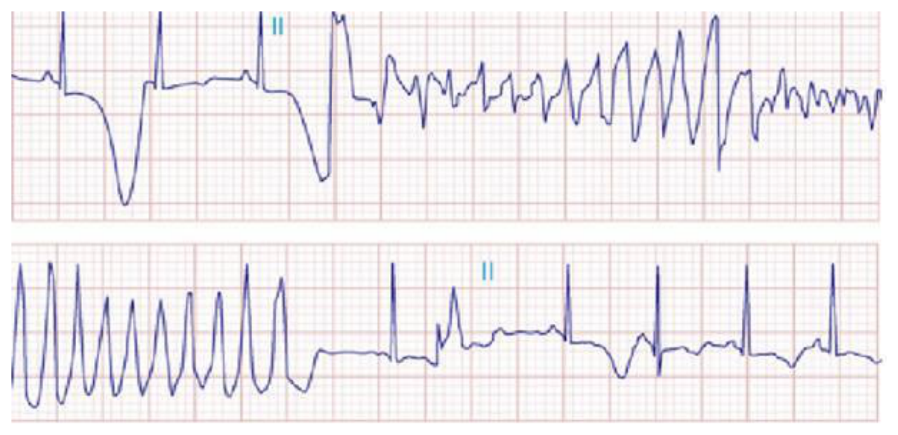
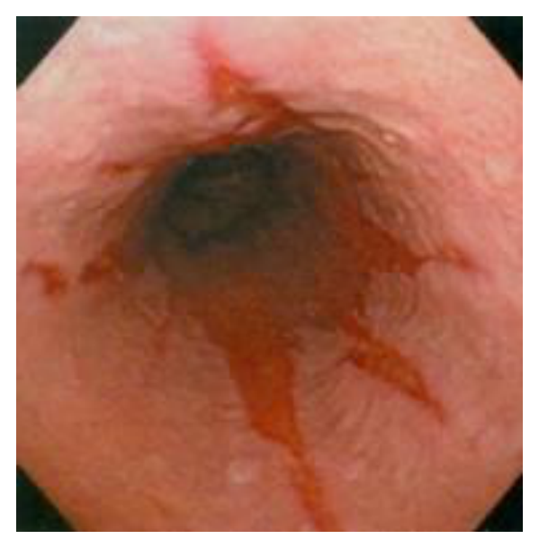
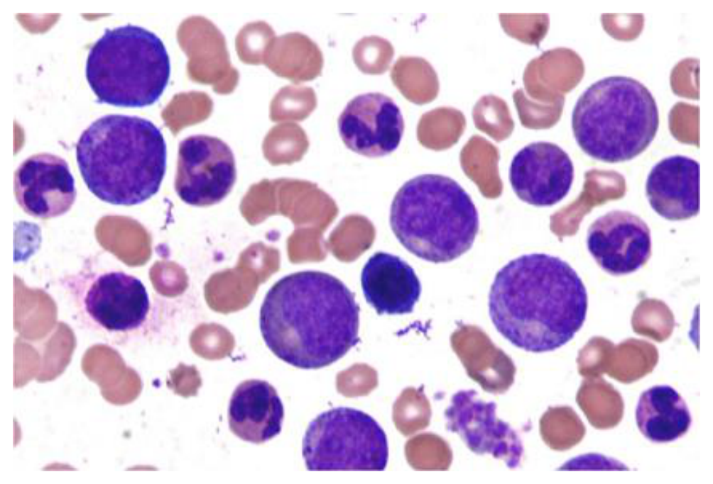
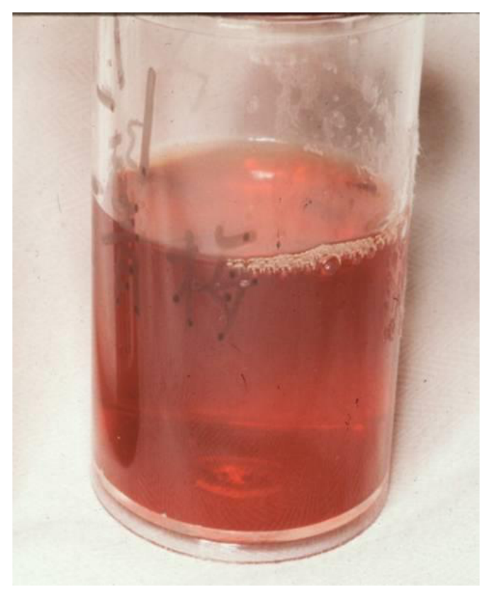
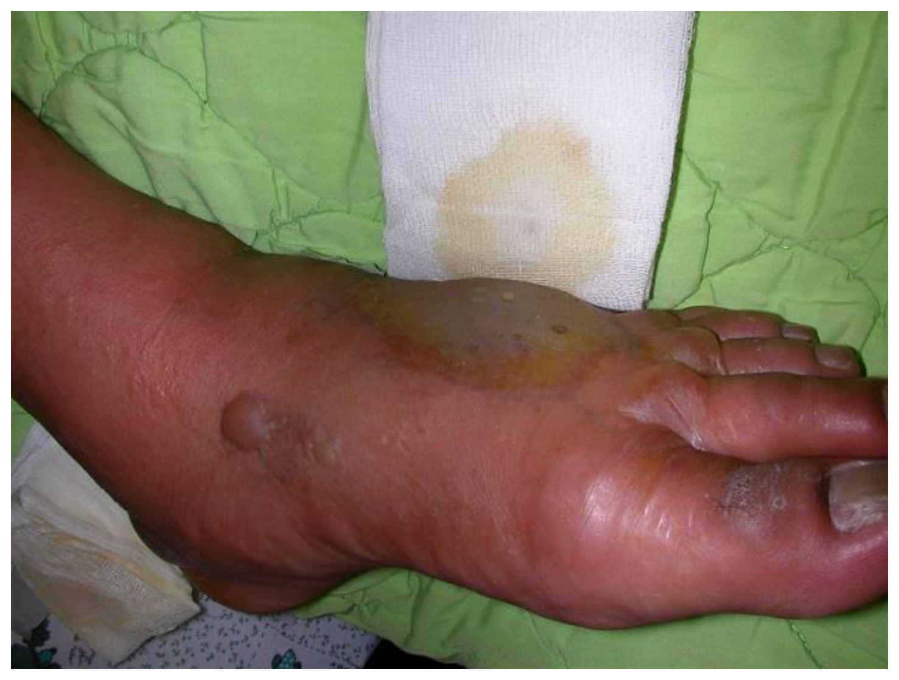
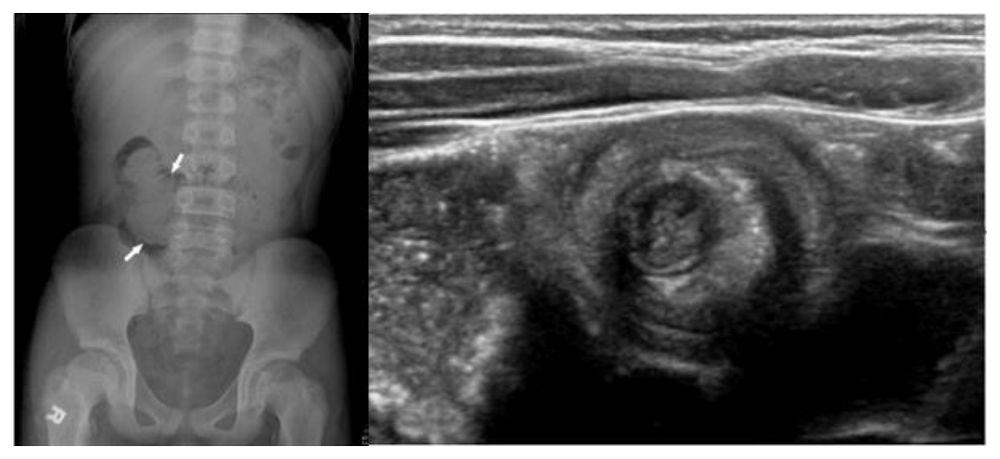

114 年第 2 次醫師醫學（三）（包括內科、家庭醫學科等科目及其相關臨床實例與醫學倫理）試題與答案
這一頁是民國 114 年第 2 次醫師醫學（三）（包括內科、家庭醫學科等科目及其相關臨床實例與醫學倫理）的整份歷屆試題，共 80 題，題目與標準答案出自考選部「國家考試試題及測驗式試題答案」開放資料，其中 80 題附有詳解。以下逐題列出題幹、選項與答案；要計時作答或記錄成績，請用線上練習。
考選部原始場次代碼：114070
線上作答這一科 →
全部 80 題
第 1 題
下列有關致癌因子（carcinogen）及其可能誘發的病變，何者最不適當？
- （A）estrogen 可能誘發子宮內膜癌（endometrial cancer）
- （B）human papilloma virus 可能誘發子宮頸癌（cervical cancer）
- （C）schistosomiasis 可能誘發膀胱癌（bladder cancer）
- （D）Helicobacter pylori 可能誘發肺癌（lung cancer）
答案：（D）
詳解與考點
正解：致癌因子與特定癌症的已知關聯。（D）Helicobacter pylori 主要與胃部惡性腫瘤及胃淋巴組織相關病變有關，不是肺癌的典型致癌因子，故為最不適當。
A：estrogen 的長期未受拮抗刺激會增加子宮內膜癌風險，配對合理。
B：human papilloma virus 與子宮頸癌密切相關，配對正確。
C：慢性 schistosomiasis，特別是泌尿系統感染，與膀胱癌風險相關，配對合理。
本題考點：感染相關致癌（infection-associated carcinogenesis）——human papilloma virus 與子宮頸癌、Helicobacter pylori 與胃部腫瘤相關；致癌物與癌種配對是常見辨析題。
第 2 題
厭食症（anorexia nervosa）的病人最不常有下列何表現？
- （A）低血壓
- （B）低血糖
- （C）腹瀉
- （D）cortisol 增加
答案：（C）
詳解與考點
正解：厭食症長期飢餓造成腸胃蠕動變慢與內分泌適應。（C）腹瀉不是最典型表現，反而常見便秘，故選 C。
A：營養不良與低體重可造成低血壓，為常見生理表現。
B：攝食不足可出現低血糖，尤其病情嚴重時更須留意。
D：飢餓壓力下 cortisol 可升高，屬常見的內分泌適應變化。
本題考點：厭食症（anorexia nervosa）——飢餓可導致低血壓、低血糖、便秘及內分泌改變；cortisol 升高反映壓力與飢餓適應。
第 3 題
有關急性痛風性關節炎之建議用藥，下列何者最不適當？
- （A）nonsteroidal anti-inflammatory drugs（NSAIDs）
- （B）colchicine
- （C）glucocorticoids
- （D）allopurinol
答案：（D）
詳解與考點
正解：急性痛風發作須以 NSAIDs、colchicine 或 glucocorticoids 控制當次發炎。（D）allopurinol 不具立即抗發炎止痛作用，因此不是本題所問的急性期症狀治療，故最不適當。若另有尿酸降低治療適應症，仍可依病況於發作期間啟動或持續使用。
A：NSAIDs 可抑制急性關節發炎，是常用急性期選擇之一。
B：colchicine 對急性痛風的發炎反應有效，尤其及早使用時可考慮。
C：glucocorticoids 可用於不適合 NSAIDs 或 colchicine 的病人，亦可控制急性發炎。
本題考點：急性痛風性關節炎（acute gouty arthritis）——急性期以 NSAIDs、colchicine 或 glucocorticoids 控制發炎；allopurinol 是尿酸降低治療（urate-lowering therapy），不具立即症狀控制作用。
第 4 題
一位 90 歲女性巴金森氏症（Parkinson's disease）病友因肺炎住院，住院後發現有意識混亂、注意力無法集中之情況，有時答非所問，有時嗜睡不易叫醒，有時認不得家人，更時常半夜失眠吵鬧，狀況時好時壞，一天中起伏很大；住院前並無此種現象。欲確診其目前病況，下列何種工具之敏感度（sensitivity）與特異度（specificity）最佳？
- （A）Confusion Assessment Method
- （B）Clinical Dementia Rating
- （C）Mini-Cog test
- （D）Mini-Mental Status Examination
答案：（A）
詳解與考點
正解：住院後急性發作、注意力不集中、日夜顛倒及一天內大幅波動，典型為譫妄。（A）Confusion Assessment Method 專為譫妄辨識設計，故選 A。
B：Clinical Dementia Rating 用於失智嚴重度評估，無法取代急性譫妄的診斷工具。
C：Mini-Cog 是認知障礙篩檢工具，對注意力波動的急性譫妄不具特異性。
D：Mini-Mental Status Examination 可粗估認知功能，但易受教育與當下注意力影響，並非本題譫妄的最佳確認工具。
本題考點：譫妄辨識（delirium detection）——急性起病、注意力障礙與波動是核心特徵；混亂評估方法（Confusion Assessment Method, CAM）可系統化判定譫妄。
第 5 題
一位 60 歲男性，有吸菸嚼食檳榔習慣，主訴有頭暈、食慾差、倦怠、體重減輕與便秘等症狀。身體診察發現脫水現象，實驗室檢查發現高血鈣（3.1 mmol/L）、低血磷（2.1 mg/dL）及腎功能不全（血液尿素氮 57mg/dL、肌酸酐 2.3 mg/dL）。其血清中白蛋白（albumin 3.0 g/dL）及副甲狀腺激素（parathyroid hormone7.7 pg/mL）濃度皆低於正常參考值。下列敘述何者最不適當？
- （A）校正後血清鈣濃度為 3.9 mmol/L
- （B）有可能是惡性腫瘤的併發症
- （C）牛奶–鹼劑症候群（milk-alkali syndrome）有可能是本病人之病因
- （D）可利用生理食鹽水（normal saline）利尿，以促進鈣的排泄
答案：（A）
詳解與考點
正解：低白蛋白時須校正總血鈣。血鈣 3.1 mmol/L 約為 12.4 mg/dL；以常用校正法，校正鈣＝12.4+0.8×(4.0-3.0)＝13.2 mg/dL，約 3.3 mmol/L，而非 3.9 mmol/L。（A）最不適當，故選 A。此題涉及單位換算與校正式的適用性
B：高血鈣、低 PTH、體重減輕與吸菸檳榔病史可考慮惡性腫瘤相關高血鈣，敘述合理。
C：milk-alkali syndrome 可造成高血鈣、腎功能異常與代謝性鹼中毒，因此是鑑別診斷之一。
D：先以 normal saline 補充脫水可增加尿鈣排出；是否進一步利尿須依容量狀態審慎決定，不能在脫水時先行。
本題考點：高血鈣（hypercalcemia）——低白蛋白時要校正總鈣；副甲狀腺激素（parathyroid hormone, PTH）受抑制時應考慮惡性腫瘤等非 PTH 原因。
第 6 題
下列關於經皮冠狀動脈介入（percutaneous coronary intervention, PCI）術前、術中、術後使用之抗凝血、抗血小板藥物之敘述，何者錯誤？
- （A）若已知病人將接受 PCI 且未曾服用抗血小板藥物，術前應給與 aspirin 325 mg 及 clopidogrel 600 mg 以降低術中血栓併發症風險
- （B）若經植入第二代或更新的藥物塗層冠狀動脈金屬支架，因其晚期支架內血栓之風險較低，故術後血小板雙抗藥物治療（dual antiplatelet therapy）可於 6 個月後停止
- （C）PCI 術中為預防血栓形成，須以傳統肝素、低分子肝素、或第一凝血因子（fibrinogen）抑制劑預防凝血
- （D）在急性心肌梗塞且冠狀動脈內有大量血栓存在時，可靜脈投與醣蛋白 IIb/IIIa 受體抑制劑
答案：（C）
詳解與考點
正解：PCI 術中抗凝血須使用具抗凝血作用的藥物；fibrinogen 是凝血底物而非抑制劑。（C）將「第一凝血因子 fibrinogen 抑制劑」列為 PCI 預防血栓的標準用藥，概念錯置，故為錯誤選項。抗血小板與抗凝血療程會隨急性冠心症、出血風險及支架型態調整
A：未接受抗血小板治療且預計 PCI 者，常須在術前給予 aspirin 與 P2Y12 抑制劑以降低血栓風險；實際劑量與時機須依情境決定。
B：新一代藥物塗層支架的雙重抗血小板治療期間可依缺血與出血風險調整，6 個月是常見決策節點，並非（C）的機轉錯誤。
D：急性心肌梗塞合併大量冠狀動脈血栓時，醣蛋白 IIb/IIIa 受體抑制劑可在選定情境作為靜脈輔助治療。
本題考點：經皮冠狀動脈介入（percutaneous coronary intervention, PCI）——抗血小板治療（antiplatelet therapy）與抗凝血治療（anticoagulation）分別作用於血小板與凝血級聯；fibrinogen 是凝血因子 I，不是常規抗凝藥物。
第 7 題
胡先生 72 歲，有抽菸（每天 1 包），並患有糖尿病、高血壓，於心臟科門診定期追蹤治療。原本只要兩種高血壓用藥便可將血壓維持在 130/80 mmHg，但近期血壓不時高至 200/130 mmHg，病人體重、食慾並無明顯變化，身體診察發現下肢血壓高於上肢血壓，驗血 serum creatinine 從原本 1.2 mg/dL 上升至 2.0 mg/dL，鉀離子為 3.5 mmol/L，若懷疑病人為續發性高血壓，最可能診斷為何？
- （A）高醛固酮症（hyperaldosteronism）
- （B）腎動脈狹窄
- （C）庫欣氏症候群（Cushing syndrome）
- （D）甲狀腺亢進
答案：（B）
詳解與考點
正解：高齡男性合併抽菸、糖尿病與高血壓等動脈粥樣硬化危險因子，原已控制的血壓突然惡化，並有 creatinine 上升，關鍵指向腎血流下降造成的續發性高血壓。腎動脈狹窄使腎灌流壓降低，活化腎素－血管張力素－醛固酮系統（renin-angiotensin-aldosterone system, RAAS），導致嚴重高血壓與腎功能惡化；鉀離子 3.5 mmol/L 也可由醛固酮作用而偏低，故選 B。
A：高醛固酮症可造成高血壓與低血鉀，看似符合鉀離子偏低；但題目更突出的線索是廣泛動脈粥樣硬化危險因子與腎功能近期惡化，較支持腎動脈狹窄造成的繼發性 RAAS 活化。
C：庫欣氏症候群常有向心性肥胖、滿月臉、紫紋或肌無力等皮質醇過多表現；本例體重與食慾無明顯變化，且無相應臨床特徵。
D：甲狀腺亢進可使心輸出量增加而出現高血壓，但通常合併心悸、怕熱、體重減輕或顫抖，無法解釋本例腎功能惡化的線索。
本題考點：腎動脈狹窄（renal artery stenosis）是動脈粥樣硬化病人難治型或突然惡化高血壓的重要原因；RAAS 活化可造成血壓上升、低血鉀傾向與腎功能變化。
第 8 題
下列有關高血壓藥物治療的敘述，何者錯誤？
- （A）高血壓合併左心室功能異常的病人，選用利尿劑、angiotensin-converting enzyme inhibitor、angiotensin receptor blocker 或β-blocker 皆可
- （B）高血壓合併蛋白尿的病人，宜優先選用β-blocker 或利尿劑
- （C）＜50 歲的單純高血壓病人，可優先選用 angiotensin-converting enzyme inhibitor
- （D）＞80 歲的單純高血壓病人，可優先選用利尿劑及鈣離子阻斷劑
本題送分，無標準答案
詳解與考點
本題官方公告送分。
第 9 題
馬伯伯 1 年前因為急性心肌梗塞導致心臟功能受損，需要長期服藥控制。最近因天氣炎熱，每天都喝很多冰水消暑。但是他慢慢覺得走路不到 10 公尺就喘得很厲害，小腿也比以前腫脹，即使沒有活動整天看電視也覺得很容易疲勞。到了半夜睡覺的時候，常常因為喘而需要坐起來，一整夜需起來 5、6 次，睡眠品質相當不好。馬伯伯的症狀中，那一項較不屬於典型心臟衰竭的臨床表現？
- （A）喝很多冰水消暑
- （B）小腿比以前腫脹
- （C）整天覺得很疲勞
- （D）半夜睡覺的時候，常常因為喘而需要坐起來
答案：（A）
詳解與考點
正解：題目問較不屬於典型心臟衰竭的「症狀」。大量喝冰水是病人的生活行為，可能增加體液負荷而使心衰竭加重，卻不是由心衰竭本身產生的臨床表現，故選 A。
B：小腿腫脹反映靜脈鬱血與水鈉滯留，是右心衰竭或鬱血性心衰竭常見的周邊水腫表現。
C：心輸出量下降與組織灌流不足可造成疲勞、活動耐受性下降，即使休息時也可能感到倦怠。
D：平躺後靜脈回流增加而加重肺鬱血，可造成陣發性夜間呼吸困難（paroxysmal nocturnal dyspnea），需坐起來才改善，是典型心衰竭症狀。
本題考點：心臟衰竭（heart failure）的典型表現包括疲勞、活動後呼吸困難、端坐呼吸、陣發性夜間呼吸困難與周邊水腫；誘發或加重因素不等同於臨床症狀。
第 10 題
一位 35 歲的男性病人懷疑是白袍高血壓（white coat hypertension），下列何項診斷工具對鑑別診斷或病情評估的幫助可能最小？
- （A）24 小時行動血壓計
- （B）居家血壓監測
- （C）心臟超音波
- （D）運動心電圖
答案：（D）
詳解與考點
正解：白袍高血壓的核心是診間血壓升高、院外血壓未必升高，因此最需要的是院外血壓紀錄；運動心電圖主要評估運動誘發缺血或心律不整，對鑑別白袍效應幫助最小，故選 D。
A：24 小時行動血壓監測（ambulatory blood pressure monitoring）可記錄日間與夜間血壓，是確認診間與日常血壓差異的重要工具。
B：居家血壓監測可取得非診間情境下的多次血壓值，能協助辨別持續性高血壓與白袍高血壓。
C：心臟超音波無法直接診斷白袍高血壓，但可評估左心室肥厚等高血壓相關標的器官損害，對整體病情評估仍有價值。
本題考點：白袍高血壓（white coat hypertension）須以診間外血壓確認；24 小時行動血壓監測（ambulatory blood pressure monitoring）與居家血壓監測（home blood pressure monitoring）是主要評估方式。
第 11 題
一位 24 歲女性，其哥哥及弟弟均在青年時期因昏倒猝死送醫不治，本身過去並無重大疾病史，此次在坐雲霄飛車時昏厥被送至急診，心電圖如下圖，下列敘述何者錯誤？

- （A）應詳盡地詢問病患的過去用藥史，並抽血檢驗血液中的電解質是否正常
- （B）依病患心電圖所顯現，可能心肌鈉離子或鉀離子通道異常而導致 action potential 的時間延長所致
- （C）如診斷為 genetic arrhythmia syndrome，不同基因型也會影響疾病的預後
- （D）放置 implantable cardioverter-defibrillator（ICD）對於這類病患都不能有效的改善預後
答案：（D）
詳解與考點
正解：圖中 Lead II 可見基礎心律的 QT 間期延長，且早發心室收縮後出現 QRS 振幅與軸向不斷改變的多形性心室心搏過速，符合長 QT 症候群相關的 torsades de pointes 表現。對曾昏厥、已有猝死家族史且出現此類惡性心律不整的高風險病患，植入式心臟去顫器（implantable cardioverter-defibrillator, ICD）可偵測並終止致命性心室心律不整，對適當選擇的病患能改善預後；（D）稱對這類病患「都不能」有效改善預後，為錯誤敘述。
A：後天性 QT 延長可由藥物或電解質異常誘發或加劇，因此應先釐清過去用藥，包括可能延長 QT 的藥物，並檢驗鉀、鎂、鈣等電解質；這是合理且必要的評估，故非錯誤。
B：心肌離子通道異常可造成心室再極化延遲，使 action potential duration 與 QT 間期延長；涉及鈉離子通道或鉀離子通道的遺傳性通道病均可能造成此類表現，故敘述正確。
C：遺傳性心律不整症候群的基因型與臨床表現、心律不整觸發情境及預後風險有關，因此確診後的基因與家族評估有助於危險分層；敘述正確，故非答案。
本題考點：長 QT 症候群（long QT syndrome）可因再極化異常造成 QT 延長與 torsades de pointes；多形性心室心搏過速（polymorphic ventricular tachycardia）可導致昏厥與心因性猝死；植入式心臟去顫器（implantable cardioverter-defibrillator, ICD）用於適當高風險病患的猝死預防。
第 12 題
一位 60 歲女性，高血壓病人，經藥物治療 3 個月控制穩定，血壓已降至 130/85 mmHg 左右。最近一個月，常有突發性劇烈乾咳，肺部聽診正常，胸部 X 光亦正常。下列何種處置應最優先？
- （A）立即開立化痰藥水
- （B）立即開立氣管擴張劑
- （C）詢問使用何種高血壓藥物
- （D）安排胸部斷層攝影
答案：（C）
詳解與考點
正解：血壓穩定治療後新出現乾咳，且肺部聽診與胸部 X 光正常，關鍵是血管張力素轉換酶抑制劑（angiotensin-converting enzyme inhibitor, ACE inhibitor）的常見副作用。應先詢問實際使用的高血壓藥物，以確認藥物相關咳嗽並決定後續調整，故選 C。
A：化痰藥針對痰液不易排出，無法處理本例無痰的藥物性乾咳，也可能延誤找出原因。
B：氣管擴張劑適用於支氣管痙攣等阻塞性氣道問題；本例沒有喘鳴或肺部異常證據，不是優先處置。
D：胸部斷層攝影比胸部 X 光更精細，但在理學檢查與 X 光正常、又有明確藥物副作用線索時，不應先跳過病史釐清而進行高階影像檢查。
本題考點：ACE inhibitor 相關咳嗽（ACE inhibitor-induced cough）通常為持續性乾咳；藥物不良反應（adverse drug reaction）的評估首先要完整核對用藥史。
第 13 題
關於冠狀動脈疾病（coronary artery disease）合併穩定心絞痛病人的藥物治療，下列敘述，何者正確？
- （A）如無禁忌症，乙型交感神經阻斷劑（beta blocker）應優先使用，但曾發生心肌梗塞者除外
- （B）合併糖尿病或左心室功能不全者，均應給與血管張力素轉換酶抑制劑（angiotensin converting enzymeinhibitor），但要注意病人腎功能變化
- （C）鈣離子通道阻斷劑（calcium channel blocker）可有效降低血壓，但不應與長效硝化物（nitrate）合用，以免發生水腫
- （D）dipyridamole 可抑制血小板凝集，建議應常規給與
本題送分，無標準答案
詳解與考點
本題官方公告送分。
第 14 題
女性病人因近日胸悶及心悸至心臟科門診求診。病人過去並無內科或全身性病史。身體診察發現有輕微收縮期心雜音。心電圖與胸部 X 光檢查皆無異常。心臟超音波顯示心臟收縮功能正常，但卻發現有二尖瓣脫垂現象。下列敘述何者錯誤？
- （A）常見於女性，好發年紀約 40～60 歲
- （B）心臟瓣膜黏液性（myxomatous）變化可能會影響到三尖瓣或主動脈瓣膜
- （C）可能與結締組織疾病有關，例如成骨不全症（osteogenesis imperfecta）
- （D）當病人因二尖瓣迴流出現心房顫動且發生缺血性中風時，應給與抗凝血藥物
答案：（A）
詳解與考點
正解：題目問錯誤敘述。二尖瓣脫垂（mitral valve prolapse, MVP）雖較常見於女性，但典型發現常見於較年輕至中年成人，並非特別好發於 40～60 歲這一固定年齡範圍；因此 A 的年齡敘述不恰當，故選 A。
B：MVP 常與瓣膜黏液性變化（myxomatous degeneration）相關，這類退化性改變可累及其他瓣膜，故此敘述可成立。
C：部分結締組織疾病會增加 MVP 相關變化的機會；成骨不全症（osteogenesis imperfecta）屬可相關的疾病之一，故非錯誤選項。
D：二尖瓣逆流合併心房顫動時，若已發生缺血性中風，血栓栓塞風險高，抗凝血治療是重要的次發預防方向，故此敘述正確。
本題考點：二尖瓣脫垂（mitral valve prolapse）常與黏液性瓣膜退化（myxomatous degeneration）相關；顯著二尖瓣逆流可引發心房顫動（atrial fibrillation）與血栓栓塞風險。
第 15 題
陳先生平時工作忙碌，最近因腹痛及血便至醫院求診，經檢查後懷疑是克隆氏病（Crohn's disease）。關於Crohn's disease，下列敘述何者錯誤？
- （A）腸道可能會出現瘻管（fistula）之併發症
- （B）腸道黏膜發炎多半為連續性病兆（continuous lesion），而非節段性病兆（segmental lesion）
- （C）不一定會侵犯直腸
- （D）經常會造成小腸狹窄或阻塞的後遺症
答案：（B）
詳解與考點
正解：題目問錯誤敘述。克隆氏病（Crohn's disease）的發炎特徵是節段性、跳躍性病灶（skip lesions），可在正常腸段之間出現病變；因此 B 說多半為連續性病灶，反而較接近潰瘍性結腸炎，故選 B。
A：全層腸壁發炎可形成穿透性病變，瘻管（fistula）是克隆氏病的重要併發症，故敘述正確。
C：克隆氏病可侵犯消化道任何部位，直腸不一定受侵犯；這點可與通常連續侵犯直腸的潰瘍性結腸炎區分。
D：慢性全層發炎與纖維化可導致小腸狹窄，進而造成腸阻塞，故此敘述正確。
本題考點：克隆氏病（Crohn's disease）為跨壁性（transmural）、節段性（segmental）發炎；併發症包括狹窄、腸阻塞與瘻管，須與連續性黏膜發炎的潰瘍性結腸炎（ulcerative colitis）區分。
第 16 題
55 歲肥胖男性因為胃酸逆流、胸口灼熱接受胃鏡檢查，結果如圖。下列敘述何者錯誤？

- （A）減重有助症狀控制
- （B）質子幫浦抑制劑可改善症狀
- （C）一般的藥物治療（antisecretory treatment）無法使已發生 metaplasia 的黏膜逆轉回正常細胞
- （D）食道鱗狀細胞癌的風險增加
答案：（D）
詳解與考點
正解：圖中胃食道交界處可見不規則向食道延伸的鮭紅色柱狀黏膜舌狀區，與周圍較淡的食道鱗狀黏膜對比明顯，符合 Barrett 食道（Barrett esophagus）的內視鏡表現。長期胃食道逆流可造成食道下段鱗狀上皮化生為腸型柱狀上皮，增加的是食道腺癌（esophageal adenocarcinoma）風險，不是食道鱗狀細胞癌，故錯誤敘述為 D。
A：肥胖會增加腹內壓並促進胃食道逆流；減重可減少逆流症狀與食道酸暴露，因此有助於症狀控制，敘述正確。
B：質子幫浦抑制劑（proton pump inhibitor, PPI）能強力抑制胃酸分泌，降低食道酸暴露，可改善胃酸逆流與胸口灼熱症狀，敘述正確。
C：一般抑酸治療可控制逆流症狀與食道炎，但通常無法使已形成的 Barrett 化生黏膜穩定逆轉為正常鱗狀上皮，敘述正確。
本題考點：Barrett 食道（Barrett esophagus）是慢性胃食道逆流造成的腸化生（intestinal metaplasia）；其重要惡性轉化風險為食道腺癌（esophageal adenocarcinoma），須與食道鱗狀細胞癌（esophageal squamous cell carcinoma）的危險因子區分。
第 17 題
位於頭部之胰臟癌相對於體、尾部之胰臟癌較常見的症狀為何？
- （A）黃疸
- （B）體重減低
- （C）腹痛
- （D）噁心嘔吐
答案：（A）
詳解與考點
正解：胰頭癌靠近總膽管末端，腫瘤較容易壓迫膽道造成阻塞性黃疸；相較之下，胰體、胰尾癌通常較晚才因局部侵犯或轉移出現症狀，故選 A。
B：體重減低是胰臟癌的全身性症狀，胰頭與胰體尾部腫瘤皆可能出現，不能作為最有區別力的部位線索。
C：腹痛也常見於胰臟癌，尤其病灶侵犯腹腔神經叢時；它不如黃疸能特異提示胰頭位置。
D：噁心嘔吐可由腫瘤造成消化道症狀或晚期全身狀態引起，但不是胰頭癌相對胰體尾癌最典型的差異。
本題考點：胰頭癌（pancreatic head cancer）因接近總膽管，常以阻塞性黃疸（obstructive jaundice）表現；胰體、胰尾癌較易在較晚期才被發現。
第 18 題
一位 54 歲男性病人主訴倦怠、食慾差，過去肝炎史不詳，抽血生化檢查顯示：ALT（GPT）：1860 U/L、AST（GOT）：1256 U/L、total bilirubin：6.8 mg/dL、鹼性磷酸酶（alkaline phosphatase）：95 U/L（正常值＜100 U/L）。下列何者為最適宜之進一步檢查組合？
- （A）HBsAg，anti-HBs，anti-HBc
- （B）anti-HBc，anti-HCV
- （C）HBsAg，anti-HBs
- （D）HBsAg，anti-HCV
答案：（D）
詳解與考點
正解：ALT 1860 U/L 與 AST 1256 U/L 顯著升高，而 alkaline phosphatase 95 U/L 未升高，為急性肝細胞性損傷型態；合併黃疸時，優先應篩檢常見病毒性肝炎。HBsAg 用於辨識目前 B 型肝炎感染，anti-HCV 用於篩檢 C 型肝炎感染，故最適宜的組合為 D。
A：anti-HBs 反映對 B 型肝炎的免疫狀態，anti-HBc 有助於釐清感染史；但此組合未篩檢 C 型肝炎，對不明肝炎病史的初步檢查不夠完整。
B：anti-HBc 陽性可見於既往或目前 B 型肝炎感染，單獨使用缺少 HBsAg，難以直接判斷目前 B 型肝炎表面抗原狀態。
C：HBsAg 與 anti-HBs 可評估 B 型肝炎感染或免疫，但遺漏 anti-HCV；在急性肝細胞性損傷的鑑別中，看似已涵蓋 B 型肝炎，仍不足以完成常見病毒性病因的初步篩檢。
本題考點：肝細胞性損傷（hepatocellular injury）以轉胺酶顯著升高為特徵；病毒性肝炎初步篩檢常以 HBsAg 評估 B 型肝炎、anti-HCV 評估 C 型肝炎。
第 19 題
60 歲肥胖（BMI：27 kg/m2）、有糖尿病史、不曾喝酒的婦女，於健康檢查接受腹部超音波檢查時發現脂肪肝。下列敘述，何者最不恰當？
- （A）患者可以診斷為非酒精性脂肪肝病（non-alcoholic fatty liver disease, NAFLD），定義為肝臟裡面脂肪（主要是 triglyceride）含量過高
- （B）腹部超音波檢查除了偵測脂肪浸潤（hepatic steatosis）外，也可同時偵測脂肪性肝炎（steatohepatitis）的存在
- （C）使用藥物如 methotrexate, tamoxifen 及 glucocorticoid 也可能造成脂肪肝
- （D）非酒精性脂肪肝病（non-alcoholic fatty liver disease, NAFLD）病患的 AST 及 ALT 數值可能有異常現象，但數值高低與組織學嚴重度無關
答案：（B）
詳解與考點
正解：腹部超音波可偵測肝脂肪浸潤（hepatic steatosis），但無法可靠辨識是否已存在脂肪性肝炎（steatohepatitis）；後者涉及發炎與肝細胞損傷的組織學判讀。因此 B 把超音波的能力延伸到偵測脂肪性肝炎，是最不恰當的敘述，故選 B。
A：此病人有肥胖與糖尿病且不飲酒，符合非酒精性脂肪肝病（non-alcoholic fatty liver disease, NAFLD）的典型臨床脈絡；其核心為肝內脂肪堆積。
C：某些藥物可造成或加重脂肪肝，methotrexate、tamoxifen 與 glucocorticoid 都是應納入用藥史評估的可能因素。
D：NAFLD 病人的 AST、ALT 可正常或異常，血清轉胺酶高低不可靠地反映脂肪性肝炎與纖維化的組織學嚴重度，故敘述正確。
本題考點：非酒精性脂肪肝病（non-alcoholic fatty liver disease, NAFLD）與代謝危險因子密切相關；超音波（ultrasonography）可偵測脂肪肝，不能單獨診斷脂肪性肝炎（steatohepatitis）。
第 20 題
下列有關肝腎症候群（hepatorenal syndrome, HRS）的敘述，何者錯誤？
- （A）HRS 常常發生於嚴重肝硬化而且合併難治性腹水（refractory ascites）的患者
- （B）第一型（type 1）HRS 是一種急性而且在兩星期內快速惡化的腎衰竭
- （C）HRS 的發生與全身血管收縮阻力上升有關
- （D）一般而言，一旦發生 HRS，患者預後極差，須依賴肝移植救治
本題送分，無標準答案
詳解與考點
本題官方公告送分。
第 21 題
有關 B 型肝炎疫苗的敘述，下列何者錯誤？
- （A）anti-HBs 至少大於 100 mIU/mL 才具有保護力
- （B）新生兒接種後，保護力至少 5 年，且可能達 20 年以上
- （C）免疫抑制中的個案，若是 anti-HBs 消失需要追加疫苗注射
- （D）血液透析患者，接種 B 型肝炎疫苗後，需要每年監測 anti-HBs 效價
答案：（A）
詳解與考點
正解：題目問錯誤敘述。B 型肝炎疫苗接種後，anti-HBs 達 10 mIU/mL 以上通常即視為具保護性反應，不必至少達 100 mIU/mL；故 A 把保護力門檻訂得過高而錯誤。
B：完成新生兒 B 型肝炎疫苗接種後，免疫記憶可維持多年，保護效果可長期存在，故此敘述正確。
C：免疫抑制者對疫苗保護力的維持較不穩定，若 anti-HBs 消失，需重新評估並考慮追加接種，故非錯誤選項。
D：血液透析患者屬免疫反應較差的高風險族群，接種後需定期追蹤 anti-HBs 效價，以評估是否需要追加疫苗，故敘述正確。
本題考點：B 型肝炎疫苗（hepatitis B vaccine）免疫反應以 anti-HBs 評估；anti-HBs ≥10 mIU/mL 通常代表保護性抗體反應，高風險或免疫低下族群需個別追蹤。
第 22 題
60 歲的病人因腹水住院，下列抽血及腹水檢查數值，何者最可能是肝硬化所引起的腹水？
- （A）血中白蛋白（albumin）值 3.1 g/dL，腹水的白蛋白（albumin）值 2.1 g/dL，腹水的總蛋白（totalprotein）值 2.3 g/dL
- （B）血中白蛋白（albumin）值 4.3 g/dL，腹水的白蛋白（albumin）值 2.6 g/dL，腹水的總蛋白（totalprotein）值 3.0 g/dL
- （C）血中白蛋白（albumin）值 2.8 g/dL，腹水的白蛋白（albumin）值 2.0 g/dL，腹水的總蛋白（totalprotein）值 2.8 g/dL
- （D）血中白蛋白（albumin）值 2.8 g/dL，腹水的白蛋白（albumin）值 1.2 g/dL，腹水的總蛋白（totalprotein）值 2.0 g/dL
答案：（D）
詳解與考點
正解：肝硬化門脈高壓造成的腹水以血清－腹水白蛋白梯度（serum-ascites albumin gradient, SAAG）判讀。D 的 SAAG=2.8−1.2=1.6 g/dL，屬高梯度；腹水總蛋白為 2.0 g/dL，較符合肝硬化門脈高壓相關腹水，故選 D。
A：SAAG=3.1−2.1=1.0 g/dL，未達高梯度，較不支持門脈高壓所致腹水。
B：SAAG=4.3−2.6=1.7 g/dL 雖為高梯度，但腹水總蛋白 3.0 g/dL 偏高；高梯度合併高蛋白腹水較需考慮心源性等其他門脈高壓原因，非肝硬化的典型組合。
C：SAAG=2.8−2.0=0.8 g/dL，屬低梯度，較不符合肝硬化門脈高壓的腹水機轉。
本題考點：血清－腹水白蛋白梯度（serum-ascites albumin gradient, SAAG）用於判斷門脈高壓（portal hypertension）；高 SAAG 且腹水總蛋白較低的型態支持肝硬化腹水。
第 23 題
Esophageal motility disorders 是導因於 esophageal neuromuscular dysfunction，關於不同的esophageal motility disorders，下列敘述何者正確？
- （A）achalasia 病因是 loss of ganglion cells within the esophageal myenteric plexus，臨床罕見，發生率約為 1/100,000，好發於 60～80 歲年邁族群
- （B）eosinophilic esophagitis 的臨床表徵是 episode of dysphagia and chest pain，在 X 光攝影下可能呈現corkscrew esophagus、rosary bead esophagus、pseudodiverticula
- （C）diffuse esophageal spasm 的發生率逐年增加，其食道切片檢查可發現 squamous epithelial eosinophil-predominant inflammation，其對口服類固醇的效果良好
- （D）gastroesophageal reflux disease 為相當盛行的文明病，其致病機轉包括 transient lower esophagealsphincter（LES）relaxation、LES hypotension、anatomical distortion
答案：（D）
詳解與考點
正解：胃食道逆流疾病（gastroesophageal reflux disease, GERD）的核心是胃內容物逆流至食道。短暫下食道括約肌鬆弛（transient lower esophageal sphincter relaxation）、下食道括約肌壓力不足與解剖構造改變，都會削弱抗逆流屏障，故 D 正確。
A：achalasia 的確與食道肌間神經叢（myenteric plexus）神經節細胞喪失有關，但並非專好發於 60～80 歲族群；其可發生於較廣的成人年齡範圍，故整句不正確。
B：嗜酸性食道炎（eosinophilic esophagitis）可造成吞嚥困難與胸痛，但 corkscrew esophagus 等影像表現較指向食道痙攣等運動障礙，並非其典型描述。
C：diffuse esophageal spasm 是食道運動障礙；食道鱗狀上皮嗜酸性球為主的發炎與口服類固醇反應，則是嗜酸性食道炎的特徵，將兩者混為一談。
本題考點：GERD（gastroesophageal reflux disease）與下食道括約肌（lower esophageal sphincter, LES）抗逆流屏障失效有關；achalasia、diffuse esophageal spasm 與嗜酸性食道炎（eosinophilic esophagitis）須依病理與運動功能區分。
第 24 題
下列何者不是顯影劑造成急性腎傷害之機轉？
- （A）腎臟外髓質部微循環系統之阻塞
- （B）腎小管上皮細胞毒性
- （C）腎小球微血管系統阻塞
- （D）暫時性腎小管阻塞
答案：（C）
詳解與考點
正解：顯影劑相關急性腎傷害（contrast-associated acute kidney injury）的主要病理包括腎血管收縮造成外髓質缺氧、腎小管上皮直接毒性與腎小管內阻塞；腎小球微血管系統阻塞不是其典型機轉，故選 C。
A：外髓質本來就處於相對低氧環境，顯影劑造成的微循環灌流下降會加重該區缺氧，是重要機轉之一。
B：顯影劑可造成腎小管上皮細胞毒性與氧化壓力，使腎小管受損，故此敘述正確。
D：受損細胞、濃縮尿液與管腔內沉積可造成暫時性腎小管阻塞，進一步降低腎功能，故非答案。
本題考點：顯影劑相關急性腎傷害（contrast-associated acute kidney injury）涉及腎髓質缺氧（medullary hypoxia）、腎小管毒性（tubular toxicity）與管腔阻塞（tubular obstruction）。
第 25 題
一位病人的動脈血氣體分析結果：pH 7.30，PaCO2 32 mmHg，HCO3-16 mEq/L，血 Na+136 mmol/L，血 Cl-100 mmol/L；尿 Na+60 mmol/L，尿 K+40 mmol/L，尿 Cl-115 mmol/L，這是何種酸鹼平衡異常？
- （A）高陰離子隙代謝性酸中毒
- （B）正常陰離子隙代謝性酸中毒
- （C）高陰離子隙代謝性酸中毒合併呼吸性鹼中毒
- （D）急性呼吸性酸中毒
答案：（A）
詳解與考點
正解：pH 7.30 表示酸血症，HCO3- 16 mEq/L 降低，故原發問題是代謝性酸中毒。陰離子隙（anion gap）＝Na+−Cl-−HCO3-＝136−100−16=20 mEq/L，升高，故為高陰離子隙代謝性酸中毒，選 A。呼吸代償可用 Winter 公式估算：預期 PaCO2=1.5×16+8=32 mmHg，實測 PaCO2 32 mmHg，表示呼吸代償適當，沒有額外呼吸性鹼中毒。
B：正常陰離子隙代謝性酸中毒的特徵是 bicarbonate 降低時 chloride 相對上升、陰離子隙仍正常；本例計算值為 20 mEq/L，不符。
C：此選項看似因 PaCO2 偏低而可能想到呼吸性鹼中毒，但 32 mmHg 恰好等於 Winter 公式預期代償值，是代謝性酸中毒的適當代償而非混合性酸鹼異常。
D：急性呼吸性酸中毒應以 PaCO2 上升為主並使 pH 下降；本例 PaCO2 降低且 HCO3- 明顯降低，方向相反。
本題考點：高陰離子隙代謝性酸中毒（high anion gap metabolic acidosis）以 anion gap 計算辨識；Winter's formula 用於判讀代謝性酸中毒的呼吸代償是否適當。
第 26 題
有關慢性末期腎臟病人鈣磷平衡的敘述，下列何者正確？
- （A）這些病人血磷升高主要是因為腸道吸收磷的能力比正常人高
- （B）服用過多的鈣片或活性維生素 D（vitamin D3），會引起 adynamic bone disease
- （C）這些病人因為維生素 D 缺乏，因此應服用 25（OH）vitamin D 可以增加鈣的吸收，並抑制副甲狀腺素分泌
- （D）含有鋁的磷結合劑因為效果較差，不建議使用
答案：（B）
詳解與考點
正解：慢性末期腎臟病的腎性骨礦物質異常中，若鈣片或活性維生素 D 使用過量，副甲狀腺素（parathyroid hormone, PTH）可能被過度抑制，骨轉換率降低而形成無動力骨病（adynamic bone disease），故選 B。
A：末期腎臟病人的高血磷主要來自腎臟排磷能力下降，而非腸道吸收磷比正常人高。
C：腎臟無法充分將 25（OH）vitamin D 活化為具生理作用的形式；單以 25（OH）vitamin D 並不能取代活性維生素 D 對鈣吸收及 PTH 的作用，故敘述不正確。
D：含鋁磷結合劑的限制在於鋁蓄積與毒性風險，不是因為效果較差；正因安全性問題才不宜長期常規使用。
本題考點：慢性腎臟病礦物質與骨異常（chronic kidney disease-mineral and bone disorder, CKD-MBD）源於排磷下降與維生素 D 活化障礙；過度抑制 PTH 可導致無動力骨病（adynamic bone disease）。
第 27 題
25 歲男性病人，無自覺不適症狀，血壓 160/100 mmHg、抽血檢驗發現血中 creatinine 0.9 mg/dL、K+2.5mEq/L、Na+141 mEq/L，動脈血氣體分析（ABG）結果：pH 7.45、PaO2 101 mmHg、PaCO2 41 mmHg、HCO3-26mEq/L。此病人最有可能的診斷為：
- （A）牛奶–鹼症候群（milk-alkali syndrome）
- （B）Gitelman's 症候群
- （C）大腸腫瘤（villous adenoma）
- （D）鹽皮質素過多（mineralocorticoid excess）
答案：（D）
詳解與考點
正解：年輕病人有高血壓與明顯低血鉀（K+ 2.5 mEq/L），ABG 的 HCO3- 26 mEq/L 偏向代謝性鹼中毒傾向，且腎功能正常；此組合最符合鹽皮質素作用過多造成腎臟排鉀與排氫增加，故選 D。
A：牛奶－鹼症候群常由大量鈣與可吸收鹼攝取導致高血鈣、代謝性鹼中毒與腎功能惡化；本例 creatinine 正常，且無相應攝取或高血鈣線索。
B：Gitelman 症候群可有低血鉀與代謝性鹼中毒，但多為正常或低血壓的鹽分流失狀態，與本例高血壓不合。
C：絨毛腺瘤（villous adenoma）可因腸道分泌造成腹瀉與電解質異常，但通常造成體液流失，無法以此解釋持續高血壓。
本題考點：鹽皮質素過多（mineralocorticoid excess）可造成高血壓、低血鉀與代謝性鹼中毒；Gitelman syndrome 的低血鉀則通常合併低血壓或正常血壓。
第 28 題
一名低血鉀，高血壓病人，其靜脈血氣體分析結果：pH 7.45，HCO3-31 mEq/L，PvCO2 47 mmHg，尿鉀 30mmol/L，在鑑別診斷過程中，下列何種 plasma renin activity 及 plasma aldosterone concentration 組合最不可能出現？
- （A）plasma renin activity 上升，plasma aldosterone concentration 上升
- （B）plasma renin activity 上升，plasma aldosterone concentration 下降
- （C）plasma renin activity 下降，plasma aldosterone concentration 上升
- （D）plasma renin activity 下降，plasma aldosterone concentration 下降
答案：（B）
詳解與考點
正解：低血鉀、高血壓、HCO3- 31 mEq/L 與尿鉀 30 mmol/L，表示腎臟不當排鉀的代謝性鹼中毒，須用腎素與醛固酮模式鑑別。腎素上升通常會刺激醛固酮分泌，因此「plasma renin activity 上升、plasma aldosterone concentration 下降」的 B 組合最不符合生理調節，故選 B。
A：腎素上升合併醛固酮上升可見於腎血管性高血壓等繼發性醛固酮增多狀態，能造成高血壓、低血鉀與代謝性鹼中毒。
C：腎素下降、醛固酮上升是原發性醛固酮增多症（primary aldosteronism）的典型型態，故可能出現。
D：腎素與醛固酮皆下降可見於其他鹽皮質素樣作用過多的狀態，例如非醛固酮媒介的鈉滯留，故仍可列入鑑別。
本題考點：低血鉀高血壓（hypokalemic hypertension）的鑑別需合併 plasma renin activity 與 plasma aldosterone concentration；腎素－醛固酮軸（renin-aldosterone axis）受負回饋調節。
第 29 題
下列預防血液透析中發生低血壓的措施，何者最適當？
- （A）避免透析中進食
- （B）先透析後超過濾
- （C）保持透析液與體溫相近
- （D）使用生物相容性較高的人工腎臟
答案：（A）
詳解與考點
正解：預防血液透析中的低血壓，須避免在透析時增加腸胃道血流分配。進食後會出現內臟血管擴張與餐後血壓下降；此時又同時接受超過濾移除血管內容量，較容易發生症狀性低血壓。因此避免透析中進食最能直接減少此可避免的誘因，故選 A。
B：超過濾是移除體液的主要過程，透析與超過濾的順序不是預防透析中低血壓的標準核心措施；應依乾體重與血流動力狀態調整超過濾速度，而非以「先透析後超過濾」概括處理。
C：透析液溫度若接近或高於體溫，可能促進周邊血管擴張。看似維持舒適，卻不能降低低血壓風險；較低溫的透析液反而可藉減少血管擴張改善血流動力耐受性。
D：較高生物相容性的人工腎臟可減少某些透析相關發炎反應，但透析中低血壓最常見的直接問題是血容量下降與血管反應，並非主要靠膜材生物相容性預防。
本題考點：透析中低血壓（intradialytic hypotension）主要和超過濾造成的有效循環血量下降及血管調節不足有關；餐後低血壓（postprandial hypotension）會加重此風險；透析處方可從超過濾、透析液溫度與飲食時機調整。
第 30 題
一位 54 歲男性無過去病史，參加完馬拉松賽後隔天出現尿量減少（350 mL/day）合併肌肉痠痛，身體診察發現皮膚膨脹程度偏低（dry skin turgor）。實驗室檢查發現血清肌酸激酶（creatine kinase）58,000U/L，尿素氮 50 mg/dL，肌酸酐 2.1 mg/dL。腎臟超音波檢查：腎臟大小無異常，也無水腎（hydronephrosis）。有關此病患之腎功能異常，下列敘述何者錯誤？
- （A）若此病患之尿鈉排出分率（fractional excretion of sodium, FeNa）小於 1%，則可確定脫水為造成腎衰竭之主因
- （B）此病患治療方式除積極補充靜脈輸液外，可考慮給與碳酸氫鈉（NaHCO3）溶液來鹼化尿液
- （C）若併發肺水腫、高血鉀、代謝性酸中毒，且藥物治療無效，則可考慮透析治療
- （D）應檢測血鉀、血鈉、血磷，並評估用藥史
答案：（A）
詳解與考點
正解：馬拉松後少尿、肌肉痠痛與 creatine kinase 58,000 U/L，代表橫紋肌溶解（rhabdomyolysis）合併急性腎損傷。低血容量可造成腎前性成分，但肌紅蛋白造成的腎小管傷害也會存在；FeNa 小於 1%只表示鈉排出少，不能據此確定脫水是腎衰竭的唯一或主因，故錯誤的是 A。
B：早期等張晶體液補充是橫紋肌溶解的處置核心；常規以 NaHCO3 鹼化尿液並無明確腎臟效益，不建議例行使用。僅在合併顯著代謝性酸中毒、高血鉀或特定酸性尿情境下，才可能於嚴密監測下個別考慮。題目所述反映傳統作法，現行證據有爭議。
C：肺水腫、高血鉀與代謝性酸中毒若對藥物治療無效，都是急性腎損傷考慮腎臟替代治療的典型適應症，敘述正確。
D：橫紋肌溶解可引起高血鉀、高血磷及急性腎損傷，且藥物可能為誘因或加重因素；檢測電解質並檢視用藥史是必要評估，敘述正確。
本題考點：橫紋肌溶解（rhabdomyolysis）的肌紅蛋白相關急性腎損傷；FeNa 不能單獨決定病因；等張晶體液補充是初始處置核心，NaHCO3 鹼化尿液的常規效益具爭議。
第 31 題
一 60 歲女性，已有類風濕性關節炎 5 年，目前使用 methotrexate 10 mg/週及 plaquenil 200 mg/日，控制良好；但近 2 週來，尤其在運動時突有右膝關節疼痛及積水，抽取關節液時，白血球數為 800/mm3。有關右膝疼痛的原因，下列何種診斷最有可能？
- （A）類風濕性關節炎突然變成活躍（active）
- （B）藥物已無法控制之類風濕性關節炎
- （C）痛風
- （D）退化性關節炎
答案：（D）
詳解與考點
正解：類風濕性關節炎已控制良好，卻在運動時出現單側膝痛與積水，且關節液白血球僅 800/mm3。此為非發炎性關節液範圍，配合負重關節、活動時疼痛，最符合退化性關節炎（osteoarthritis），故選 D。
A：類風濕性關節炎活動時通常有發炎性滑液、晨僵與多關節對稱性表現；800/mm3 的關節液白血球不支持明顯滑膜炎。
B：藥物控制失敗應呈現原本類風濕性關節炎的疾病活動增加，而非僅突發單一膝關節的非發炎性積水，故不符。
C：痛風可造成急性單關節炎，容易因「突發膝痛」而成為誘答；但常見為高度發炎的滑液，並應以尿酸鹽結晶證實，與本題低白血球數的滑液不合。
本題考點：關節液分析（synovial fluid analysis）可區分非發炎性與發炎性關節病；退化性關節炎（osteoarthritis）常見非發炎性滑液與活動相關疼痛；類風濕性關節炎（rheumatoid arthritis）活動時多為發炎性滑膜炎。
第 32 題
下列那一種腸道細菌的感染最不易誘發反應性關節炎（reactive arthritis）的發生？
- （A）Shigella
- （B）Yersinia
- （C）Clostridium
- （D）Campylobacter
答案：（C）
詳解與考點
正解：腸道感染後誘發反應性關節炎。典型腸道觸發菌包括 Shigella、Salmonella、Yersinia 與 Campylobacter；Clostridium 並非此一經典關聯菌，因此最不易誘發反應性關節炎，故選 C。
A：Shigella 腸炎是經典的反應性關節炎前驅感染之一，感染後可出現無菌性關節炎，故不是答案。
B：Yersinia enterocolitica 感染與反應性關節炎有明確關聯，尤其可在腸胃症狀後出現下肢大關節炎，故不是答案。
D：Campylobacter 腸炎也是常考的腸道誘發感染；它看似只是一般急性腸炎，但感染後確可引發反應性關節炎，故非答案。
本題考點：反應性關節炎（reactive arthritis）是在感染後發生、關節內通常無活菌的發炎性關節炎；腸道相關病原常見 Shigella、Salmonella、Yersinia、Campylobacter；泌尿生殖道則常見 Chlamydia trachomatis。
第 33 題
一位 22 歲女性病人主訴最近一個多月常無故發燒，也常覺得兩側手指及腕關節不舒服。開學體檢被發現有白血球及血小板減少現象，且有蛋白尿的情形。下列那一項檢查最容易出現陽性的結果？
- （A）anti-dsDNA antibodies
- （B）anti-Smith antibodies
- （C）antinuclear antibodies
- （D）anticardiolipin antibodies
答案：（C）
詳解與考點
正解：年輕女性合併不明發燒、手指與腕關節不適、白血球與血小板減少及蛋白尿，構成全身性紅斑狼瘡（systemic lupus erythematosus, SLE）的典型多系統表現。抗核抗體（antinuclear antibodies, ANA）敏感度很高，故在 SLE 最容易驗到陽性，選 C。
A：anti-dsDNA antibodies 對 SLE 較具特異性，也常與狼瘡腎炎活動度相關；但其敏感度不及 ANA，故不是「最容易」陽性的檢查。
B：anti-Smith antibodies 特異性高卻敏感度較低；看似最能支持 SLE，然而題目問的是最容易陽性而非最特異，故非答案。
D：anticardiolipin antibodies 用於評估抗磷脂症候群相關的血栓或妊娠併發症，並非 SLE 最敏感的篩檢抗體。
本題考點：全身性紅斑狼瘡（systemic lupus erythematosus, SLE）的 ANA 具高敏感度；anti-dsDNA 與 lupus nephritis 有關；anti-Smith antibody 雖特異性較高，但敏感度較低。
第 34 題
下列何種原發性免疫缺陷疾病（primary immunodeficiency diseases）是因為 T 淋巴細胞之 CD40L 基因異常所引起？
- （A）X-linked chronic granulomatous disease
- （B）Wiskott-Aldrich syndrome
- （C）common variable immunodeficiency
- （D）X-linked hyper-IgM syndrome
答案：（D）
詳解與考點
正解：T 淋巴細胞的 CD40L 基因異常。活化的 T 細胞以 CD40L 與 B 細胞的 CD40 結合，促進免疫球蛋白類別轉換；CD40L 缺陷會使 IgM 偏高而 IgG、IgA、IgE 降低，為 X-linked hyper-IgM syndrome，故選 D。
A：X-linked chronic granulomatous disease 是吞噬細胞 NADPH oxidase 缺陷，造成氧化爆發障礙，與 CD40L 無關。
B：Wiskott-Aldrich syndrome 的特徵為濕疹、反覆感染與血小板減少，病因是 WAS 蛋白異常，而非 CD40L 缺陷。
C：common variable immunodeficiency 是以抗體生成不足為主的異質性疾病，並非典型由 X 染色體 CD40L 基因異常所致。
本題考點：CD40-CD40L 交互作用（CD40-CD40L interaction）是 B 細胞免疫球蛋白類別轉換（class-switch recombination）的必要訊號；X-linked hyper-IgM syndrome 由 CD40L 缺陷導致；機會性感染反映其 T 細胞協助功能不足。
第 35 題
有關血管炎的敘述，下列何者正確？
- （A）granulomatosis with polyangiitis 與 B 型肝炎有關
- （B）polyarteritis nodosa 與 C 型肝炎有關
- （C）microscopic polyangiitis 與 antineutrophil cytoplasmic antibodies 有關
- （D）cryoglobulinemic vasculitis 與 A 型肝炎有關
答案：（C）
詳解與考點
正解：血管炎與相關血清學或感染的配對。microscopic polyangiitis 是小血管炎，常與 antineutrophil cytoplasmic antibodies（ANCA），尤其 MPO-ANCA，相關，故選 C。
A：granulomatosis with polyangiitis 常與 PR3-ANCA 相關，不是 B 型肝炎的典型關聯；B 型肝炎較應想到 polyarteritis nodosa。
B：polyarteritis nodosa 的經典病毒關聯是 B 型肝炎，而非 C 型肝炎；C 型肝炎較常與 cryoglobulinemic vasculitis 連結。
D：cryoglobulinemic vasculitis 最典型與 C 型肝炎相關，不是 A 型肝炎。這個選項看似同為肝炎病毒，卻把病毒種類錯置。
本題考點：顯微多血管炎（microscopic polyangiitis）屬 ANCA-associated vasculitis；結節性多動脈炎（polyarteritis nodosa）與 hepatitis B virus 有關；冷球蛋白血管炎（cryoglobulinemic vasculitis）常與 hepatitis C virus 有關。
第 36 題
化學藥物主要用來治療轉移性癌症或做癌症輔助性治療，關於化學藥物之副作用，下列敘述何者最不合適？
- （A）taxanes 常造成周圍神經病變
- （B）bleomycin 常造成骨髓抑制
- （C）cisplatin 可能造成腎功能病變
- （D）epirubicin 可能造成心臟毒性
答案：（B）
詳解與考點
正解：「最不合適」的化學治療副作用配對。bleomycin 的重要劑量相關毒性是肺毒性，如間質性肺炎與肺纖維化；它相對不造成顯著骨髓抑制，因此 B 的敘述最不合適。
A：taxanes 常見周邊神經病變，特別是感覺性麻木或刺痛，敘述正確。
C：cisplatin 可造成腎毒性及電解質異常，故治療期間須注意腎功能，敘述正確。
D：epirubicin 屬 anthracycline 類，可造成累積性的心肌毒性；它看似比 doxorubicin 常被認為心毒性較低，但仍有心臟毒性風險，敘述正確。
本題考點：化學治療毒性（chemotherapy toxicities）——taxanes 與周邊神經病變（peripheral neuropathy）；bleomycin 與肺毒性（pulmonary toxicity）；cisplatin 與腎毒性（nephrotoxicity）；anthracyclines 與心肌病變（cardiomyopathy）。
第 37 題
近年來基因定序研究的進展，已對肝細胞癌（hepatocellular carcinoma [HCC]）的分子基因變異（molecular and genetic alterations）有更進一步的瞭解。有關 HCC 的分子基因變異中，盛行率（prevalence）最低的是：
- （A）TSC1/TSC2 mutation
- （B）TERT promoter mutation
- （C）CTNNB1 mutation
- （D）TP53 mutation
答案：（A）
詳解與考點
正解：肝細胞癌分子變異中「盛行率最低」。TERT promoter、CTNNB1 與 TP53 都是肝細胞癌常見的基因變異；相較之下，TSC1/TSC2 mutation 屬較少見的 mTOR 路徑異常，因此選 A。
B：TERT promoter mutation 是肝細胞癌最常見的分子異常之一，與題目所問的最低盛行率相反。
C：CTNNB1 mutation 影響 Wnt／β-catenin 訊號路徑，是肝細胞癌的常見變異，不是最低者。
D：TP53 mutation 亦是肝細胞癌重要且常見的變異；它看似只與特定暴露或病因相關，但在整體 HCC 分子圖譜中盛行率仍高於 TSC1/TSC2。
本題考點：肝細胞癌（hepatocellular carcinoma, HCC）的常見分子變異包括 TERT promoter mutation、CTNNB1 mutation 與 TP53 mutation；mTOR pathway 的 TSC1/TSC2 mutation 較少見；分子盛行率會隨病因與族群而異。
第 38 題
下列有關 non-Hodgkin's lymphoma 的描述，何者錯誤？
- （A）diffuse large B-cell lymphoma 在東西方國家均是發生率最高的 non-Hodgkin's lymphoma
- （B）CD10 是 B 細胞特有的細胞表面抗原，存在於較不成熟與成熟的 B 細胞表面，是 rituximab 的治療標的
- （C）對於 Burkitt's lymphoma 之治療，中樞神經之預防性治療是必要的。只要治療得當，超過一半比例的病人可以長期存活
- （D）mycosis fungoides 是一種 T 細胞的淋巴瘤，以侵犯皮膚為主
答案：（B）
詳解與考點
正解：non-Hodgkin's lymphoma 的錯誤敘述。rituximab 的治療標的是 B 細胞表面的 CD20，不是 CD10；CD10 也不是所有 B 細胞特有的表面抗原。因此 B 把標記與治療標的混為一談，故選 B。
A：diffuse large B-cell lymphoma 是成人最常見的 non-Hodgkin's lymphoma 類型，敘述正確。
C：Burkitt's lymphoma 生長快速且有中樞神經侵犯風險，治療方案通常包含中樞神經預防；以密集治療可達長期存活，敘述方向正確。
D：mycosis fungoides 是以皮膚為主要侵犯部位的 cutaneous T-cell lymphoma，敘述正確。
本題考點：rituximab 是 anti-CD20 monoclonal antibody；CD10 是生發中心 B 細胞相關標記（germinal-center marker），不能作為 rituximab 標的；非何杰金氏淋巴瘤（non-Hodgkin's lymphoma）須以細胞表面標記與臨床型態鑑別。
第 39 題
有些淋巴瘤（lymphoma）之發生與病毒或細菌感染有關連性。下列連結何者最不適當？
- （A）cytomegalovirus 與中非地區的 Burkitt's lymphoma
- （B）Epstein-Barr virus 與亞洲地區的 extranodal nasal NK/T-cell lymphoma
- （C）human T-cell lymphotropic virus 1（HTLV-1）與 adult T-cell lymphoma（ATL）
- （D）Helicobacter pylori 與 gastric MALT（mucosa-associated lymphoid tissue）lymphoma
答案：（A）
詳解與考點
正解：淋巴瘤與感染病原的「最不適當」連結。中非地區 endemic Burkitt's lymphoma 的典型病毒關聯是 Epstein-Barr virus（EBV），不是 cytomegalovirus（CMV），故選 A。
B：亞洲地區 extranodal nasal NK/T-cell lymphoma 與 EBV 關係密切，敘述正確。
C：HTLV-1 是 adult T-cell lymphoma/leukemia 的致病相關病毒，敘述正確。
D：Helicobacter pylori 的慢性抗原刺激和 gastric MALT lymphoma 有關，根除感染後部分病人可緩解，敘述正確。
本題考點：endemic Burkitt lymphoma 與 Epstein-Barr virus；extranodal NK/T-cell lymphoma 與 Epstein-Barr virus；adult T-cell lymphoma/leukemia 與 HTLV-1；gastric MALT lymphoma 與 Helicobacter pylori。
第 40 題
一位 43 歲女士過去無特殊病史，在健康檢查時發現血紅素 14.5 g/dL，白血球 78,500/μL，血小板495,000/μL；血液抹片如圖所示。此病人最可能的診斷為何？

- （A）essential thrombocytosis
- （B）chronic myeloid leukemia
- （C）leukemoid reaction
- （D）acute myeloid leukemia
答案：（B）
詳解與考點
正解：血紅素 14.5 g/dL 正常，但白血球高達 78,500/μL 並合併血小板上升。圖中可見大量不同成熟階段的顆粒球，包括分葉嗜中性球、桿狀核球、較幼稚的骨髓球與後骨髓球，呈現明顯左移（left shift），且可見嗜鹼性球樣深紫色顆粒細胞；這種「全系列髓系細胞增生」合併血小板增多的血液抹片型態，最符合慢性骨髓性白血病（chronic myeloid leukemia, CML），故選 B。
A：原發性血小板增多症（essential thrombocytosis）以持續性血小板顯著增多為主，白血球可輕度上升，但不會典型地出現圖中大量不同成熟階段顆粒球的廣泛左移；本題白血球極高且髓系細胞譜系擴增，較支持 CML。
C：類白血病反應（leukemoid reaction）可因嚴重感染、發炎或腫瘤造成白血球顯著上升與左移，看似 CML；但通常有明確誘因，且以成熟嗜中性球、桿狀核球及毒性顆粒等反應性變化為主。本例病人無特殊病史，並有血小板增多及多階段髓系細胞增生，較符合骨髓增生性腫瘤的 CML。
D：急性骨髓性白血病（acute myeloid leukemia）主要特徵是骨髓與周邊血中原始細胞（myeloblast）增加，常伴隨貧血、血小板低下或正常成熟顆粒球減少；圖中以多種成熟至近成熟的顆粒球前驅細胞為主，血紅素正常且血小板增多，不符合急性白血病的型態。
本題考點：慢性骨髓性白血病（chronic myeloid leukemia, CML）是骨髓增生性腫瘤（myeloproliferative neoplasm），周邊血可見各成熟階段顆粒球增多、左移與嗜鹼性球增多；類白血病反應（leukemoid reaction）須與 CML 鑑別；急性骨髓性白血病（acute myeloid leukemia, AML）則以原始細胞增多為核心。
第 41 題
一位 35 歲婦女，過去無特殊病史。最近 3 個月來皮膚經常出現瘀青，這幾天變得更厲害。身體診察發現手腳多處瘀青，其他無異常。抽血檢查顯示血紅素 12.1 g/dL，白血球 7,850/μL 且分類正常，血小板 13,000/μL；肝、腎功能正常，HIV 抗體陰性，抗核抗體（ANA）陰性，大、小便無潛血；病人過去並無特殊服藥史。對此病人目前最常見的優先處置為何？
- （A）platelet transfusion
- （B）intravenous immunoglobulin infusion
- （C）corticosteroid treatment
- （D）eltrombopag treatment
答案：（C）
詳解與考點
正解：孤立性嚴重血小板減少、其他血球與肝腎功能正常、無出血以外異常，最符合免疫性血小板低下症（immune thrombocytopenia, ITP）。血小板 13,000/μL 且已有瘀青，成人需要初始治療時常以 corticosteroid treatment 為優先處置，故選 C。
A：platelet transfusion 的輸入血小板在 ITP 會快速被免疫破壞，通常保留給嚴重或危及生命的出血，非單純瘀青的常規第一線處置。
B：intravenous immunoglobulin 可較快提升血小板，適用於需要迅速反應或有嚴重出血的情境；本例僅見瘀青，未描述嚴重或危及生命出血，較常先用類固醇。
D：eltrombopag 是 thrombopoietin receptor agonist，通常用於對初始治療反應不佳或持續性 ITP，不是本例的最常見優先初始處置。
本題考點：免疫性血小板低下症（immune thrombocytopenia, ITP）以孤立性血小板減少為特徵；corticosteroids 是需治療成人的常見第一線；IVIG 用於需快速升高血小板或較嚴重出血；TPO receptor agonists 多為後線治療。
第 42 題
一位 45 歲女性病人因為黃疸就醫，抽血檢查發現血紅素為 9.6 g/dL，白血球 5,600/μL，血小板 235,000/μL，總膽紅素 4.5 mg/dL，直接型膽紅素 0.6 mg/dL，AST（GOT）85 U/L，ALT（GPT）32 U/L；尿液如圖所示。此病人最可能的診斷為何？

- （A）hepatitis
- （B）intravascular hemolysis
- （C）urinary tract infection
- （D）gallbladder stones
答案：（B）
詳解與考點
正解：血紅素 9.6 g/dL 合併以間接型為主的高膽紅素血症（總膽紅素 4.5 mg/dL、直接型膽紅素 0.6 mg/dL），表示紅血球破壞增加；AST 上升亦可見於溶血。圖中尿液呈均勻紅褐色、未見明顯混濁膿尿的外觀，符合血管內溶血時游離血紅素經腎臟排出的血紅素尿（hemoglobinuria）。因此最可能為血管內溶血，故選 B。
A：hepatitis 可造成黃疸，但通常以肝細胞受損為主，ALT、AST 常明顯上升，且膽紅素常包含直接型升高；本題以貧血、間接型高膽紅素血症及紅褐色尿液為主，較不符合肝炎。
C：urinary tract infection 常見排尿疼痛、頻尿、膿尿或混濁尿液；即使有血尿，也不能解釋貧血及以間接型膽紅素為主的黃疸，故不符。
D：gallbladder stones 若造成膽道阻塞，會以直接型膽紅素上升為主，尿色加深可因結合型膽紅素尿而出現，但無法合理解釋本題的貧血與間接型高膽紅素血症。
本題考點：血管內溶血（intravascular hemolysis）會釋放游離血紅素，造成血紅素尿（hemoglobinuria）與紅褐色尿液；溶血性黃疸（hemolytic jaundice）以非結合型／間接型膽紅素上升為主，須與肝細胞性黃疸及阻塞性黃疸區分。
第 43 題
某病人 7 年前患有嚴重型再生不良性貧血症（aplastic anemia），成功接受血型相同 HLA 資料庫配對成功之非血親造血幹細胞移植（HLA-matched unrelated hematopoietic stem cell transplantation），下列何者可以提供該病人現在最可靠的人身血緣鑑定？
- （A）血液
- （B）髮根
- （C）骨髓
- （D）白血球
答案：（B）
詳解與考點
正解：病人曾接受非血親造血幹細胞移植。移植成功後，血液、白血球與骨髓中的造血細胞 DNA 多來自捐贈者，不能可靠代表病人原本的生殖系血緣；髮根含有毛囊的非造血組織細胞，較能保留病人本人的 DNA，故選 B。
A：血液中的白血球主要源自移植的造血幹細胞，DNA 型別可能呈捐贈者嵌合，不能作為最可靠的人身血緣鑑定檢體。
C：骨髓同樣是造血細胞來源，移植後其 DNA 亦會反映捐贈者造血系統，故不適合。
D：白血球是周邊血中最常被用於 DNA 分析的細胞，但本例正因造血幹細胞移植而可能是捐贈者來源，故不可靠。
本題考點：造血幹細胞移植（hematopoietic stem cell transplantation）可造成血液嵌合（hematopoietic chimerism）；血緣鑑定應選非造血組織 DNA；髮根（hair root）可提供毛囊細胞的宿主 DNA。
第 44 題
大腸直腸癌（colorectal cancer）是全世界最常見的癌症之一，在臺灣地區的盛行率也逐年上升。腺瘤樣息肉（adenomatous polyp）被視為是大腸直腸癌的前趨病灶；大腸直腸癌會經過以下的「系列的基因變異」，而轉變成大腸直腸癌。下列的基因變異，何者與腺瘤樣息肉轉變成大腸直腸癌無關？
- （A）APC inactivation
- （B）K-ras inactivation
- （C）SMAD4 inactivation
- （D）p53 inactivation
答案：（B）
詳解與考點
正解：腺瘤－癌序列（adenoma-carcinoma sequence）中的基因變異。K-ras 在大腸直腸癌演進中是活化突變（activation），促進訊號傳遞，不是 inactivation；因此 B 所列「K-ras inactivation」與此轉變無關，故選 B。
A：APC inactivation 是早期腺瘤形成的重要事件，造成 Wnt／β-catenin 訊號失調，與腺瘤－癌序列有關。
C：SMAD4 inactivation 影響 TGF-β 訊號，常見於腺瘤進展至較晚期腫瘤的過程，敘述方向正確。
D：p53 inactivation 是大腸直腸癌晚期演進的常見事件，與腺瘤轉癌的序列有關。
本題考點：腺瘤－癌序列（adenoma-carcinoma sequence）常見 APC inactivation、KRAS activation、SMAD4 inactivation 與 TP53 inactivation；癌基因（oncogene）多以活化突變致癌，抑癌基因（tumor suppressor gene）多以失活致癌。
第 45 題
下列何者不是 CURB-65 用來評估社區型肺炎嚴重度的指標項目？
- （A）心跳次數
- （B）血中尿素氮
- （C）呼吸次數
- （D）血壓
答案：（A）
詳解與考點
正解：CURB-65 的組成字母：Confusion、Urea、Respiratory rate、Blood pressure、age 65 years or older。心跳次數不在此評分內，故選 A。
B：血中尿素氮對應 Urea，是 CURB-65 的一項指標，故不是答案。
C：呼吸次數對應 Respiratory rate，是 CURB-65 的一項指標，故不是答案。
D：血壓對應 Blood pressure，是 CURB-65 的一項指標，故不是答案。
本題考點：CURB-65 pneumonia severity score 包含 confusion、urea、respiratory rate、blood pressure、age 65 years or older；其用途是協助評估社區型肺炎（community-acquired pneumonia）的嚴重度與照護場所。
第 46 題
王先生有糖尿病病史多年，今發燒咳嗽有膿痰已 5 天，胸部 X 光攝影顯示肺有空洞（cavitation）之實質化（consolidation）病變，關於其治療與處置，下列敘述何者錯誤？
- （A）痰液和血液培養若為 Klebsiella pneumoniae，應安排眼底和腹部超音波檢查
- （B）若經治療後病情未改善，而痰液和血液培養為陰性，需進一步安排超音波或電腦斷層導引穿刺取得檢體做微生物培養
- （C）抗生素治療時應涵蓋厭氧菌
- （D）以廣效抗生素治療兩週
答案：（D）
詳解與考點
正解：糖尿病、膿痰與有空洞的實質化病變，須考慮壞死性肺炎或肺膿瘍。這類感染的抗生素療程應依致病菌、引流情況與臨床及影像反應決定，常需比單純肺炎更長；固定以廣效抗生素治療兩週並不恰當，故選 D。療程長度隨病灶與治療反應而變，本題涉及時效敏感的治療決策。
A：糖尿病病人的 Klebsiella pneumoniae 菌血症可能合併轉移性眼內炎或肝膿瘍；安排眼底與腹部評估有助尋找侵襲性或轉移性病灶，敘述可接受。
B：若未改善且血、痰培養陰性，影像導引穿刺取得深部病灶檢體可提高病原診斷率，並協助排除其他病因，敘述正確。
C：肺膿瘍或吸入相關壞死性肺部感染常須考量口腔厭氧菌；空洞病灶看似可只依一般肺炎處理，但厭氧菌涵蓋是重要處置考量，故非錯誤。
本題考點：肺膿瘍（lung abscess）與壞死性肺炎（necrotizing pneumonia）需取得病原證據並考量厭氧菌；Klebsiella pneumoniae 在糖尿病病人可造成侵襲性感染；抗生素療程依臨床穩定、培養結果與影像反應個別化。
第 47 題
一位氣喘病患平時使用支氣管擴張劑及茶鹼控制氣喘。最近其氣喘幾乎每天發作 3～4 次，每月幾乎都需要到急診求治，肺功能 FEV1 降至 56%預期值，對支氣管擴張劑的反應越來越差。對於這位病患的處置應該如何調整最為適當？
- （A）規則使用吸入性類固醇或其他抗發炎藥物
- （B）規則使用口服支氣管擴張劑以改善症狀
- （C）規則使用吸入型長效型抗膽鹼藥物改善肺功能
- （D）規則使用長效型支氣管擴張劑
答案：（A）
詳解與考點
正解：幾乎每日多次發作、反覆急診、FEV1 為預期值 56%，且僅使用支氣管擴張劑與茶鹼，顯示持續性且控制不佳的氣喘。氣喘的核心病理是慢性氣道發炎，應規則使用吸入性類固醇或其他抗發炎控制藥物，而不是只增加支氣管擴張，故選 A。
B：規則口服支氣管擴張劑只暫時改善支氣管收縮，不能處理發炎，且全身副作用較多，不是控制不佳氣喘的優先調整。
C：長效抗膽鹼藥可作為部分病人的加用治療，但不是此病人最基本且最優先缺少的抗發炎控制策略。
D：長效支氣管擴張劑可用於合併控制治療，但不宜在未有吸入性類固醇的情況下單獨規則使用；它看似能改善肺功能，卻無法取代抗發炎治療。
本題考點：氣喘（asthma）是慢性氣道發炎疾病；吸入性類固醇（inhaled corticosteroid, ICS）是持續性氣喘的控制治療基礎；長效支氣管擴張劑（long-acting bronchodilator）應搭配含 ICS 的治療策略。
第 48 題
35 歲家庭主婦因一個星期的咳嗽和呼吸短促求診。胸部 X 光檢查發現兩側肺浸潤，經支氣管鏡檢查，支氣管無異常。肺泡灌洗術（bronchoalveolar lavage）發現 eosinophil 20%。下列何者最不可能是其致病原因？
- （A）Churg-Strauss syndrome
- （B）Loffler's syndrome
- （C）hypersensitivity pneumonitis
- （D）eosinophilic pneumonia
答案：（C）
詳解與考點
正解：雙側肺浸潤且 bronchoalveolar lavage 的 eosinophil 為 20%，指向肺部嗜酸性球浸潤（pulmonary eosinophilia）。Churg-Strauss syndrome、Loffler's syndrome 與 eosinophilic pneumonia 都可與嗜酸性球肺病相關；hypersensitivity pneumonitis 的灌洗液較典型為淋巴球增加，故最不可能是致病原因，選 C。
A：Churg-Strauss syndrome，現稱 eosinophilic granulomatosis with polyangiitis，可造成氣喘、嗜酸性球增多與肺浸潤，故可能。
B：Loffler's syndrome 是短暫肺浸潤合併嗜酸性球增多的症候群，與題幹表現相容。
D：eosinophilic pneumonia 本身即以肺部嗜酸性球浸潤與肺部陰影為特徵，最能直接解釋本題發現，故非答案。
本題考點：肺嗜酸性球增多症（pulmonary eosinophilia）可由 eosinophilic pneumonia、eosinophilic granulomatosis with polyangiitis 與寄生蟲相關 Loffler syndrome 引起；過敏性肺炎（hypersensitivity pneumonitis）通常以淋巴球性肺泡炎為主。
第 49 題
有關肺炎臨床診斷之定義，下列何者錯誤？
- （A）發生在住院未滿 48 小時之病人，出現肺實質的急性感染，屬社區肺炎（community-acquired pneumonia）
- （B）上次住院結束後 14 天內發生肺實質的急性感染者，屬院內肺炎（hospital-acquired pneumonia）
- （C）使用呼吸器 24 小時以後產生的院內肺炎，屬呼吸器相關肺炎（ventilator-associated pneumonia）
- （D）在 90 天內曾在急性病醫院住院大於 2 天者，屬健康照護相關肺炎（health care-associated pneumonia）
答案：（C）
詳解與考點
正解：官方答案為 C；惟此題採用的肺炎分類與時間門檻具有舊版定義色彩。呼吸器相關肺炎（ventilator-associated pneumonia, VAP）通常定義為插管並使用呼吸器至少 48 小時後發生，非 24 小時後，故 C 錯誤。現行分類及健康照護相關肺炎的概念已隨指引更新而調整
A：社區型肺炎（community-acquired pneumonia, CAP）是未在住院後 48 小時以上才發病的肺實質急性感染；以住院未滿 48 小時作區分，符合傳統院內與社區感染的時間原則。
B：院內肺炎（hospital-acquired pneumonia, HAP）通常著重於住院 48 小時後才發生、入院時未潛伏的肺炎。選項以出院後 14 天作分類並非現行最常用定義，但在本題舊分類脈絡下未被設定為錯項。
D：health care-associated pneumonia 曾以近期急性病醫院住院等暴露史辨識抗藥菌風險；此概念看似合理，但現行 HAP/VAP 指引已不再把 HCAP 當作獨立診斷分類。
本題考點：院內肺炎（hospital-acquired pneumonia）與呼吸器相關肺炎（ventilator-associated pneumonia）以發病時機與機械通氣時間界定；VAP 的常用時間門檻為至少 48 小時；health care-associated pneumonia 是已被後續指引調整的舊分類。
第 50 題
關於肺癌的敘述，下列何者正確？
- （A）肺癌最主要的危險因子是家族肺癌病史
- （B）抽菸的病人即使得了第四期肺癌仍要戒菸，因為抽菸會降低肺癌治療的效果
- （C）低劑量電腦斷層輻射量低，因此沒有輻射導致肺癌的風險
- （D）抽菸者大量補充抗氧化維生素，可以預防肺癌的產生
答案：（B）
詳解與考點
正解：第四期肺癌病人是否仍應戒菸。吸菸會持續增加心肺與治療相關風險，並可能降低治療效果；疾病已轉移並不代表戒菸沒有益處，因此 B 正確。
A：吸菸是肺癌最主要且可避免的危險因子；家族史可增加風險，但不是最主要危險因子，故錯。
C：低劑量電腦斷層的輻射劑量較低但不是零，累積暴露仍有輻射風險，不能稱完全沒有致癌風險。
D：高劑量抗氧化維生素補充並不能預防吸菸者肺癌，部分補充品在特定高風險族群甚至可能有害；看似可中和氧化壓力，卻不能抵銷菸草致癌物的多重傷害。
本題考點：菸草暴露（tobacco exposure）是肺癌（lung cancer）的主要危險因子；肺癌診斷後戒菸（smoking cessation）仍具臨床效益；低劑量電腦斷層（low-dose computed tomography）是降低而非消除輻射暴露。
第 51 題
關於乳糜胸（chylothorax）的敘述，下列何者正確？
- （A）胸水呈牛乳狀，檢測會發現膽固醇（cholesterol）數值高於 110 mg/dL
- （B）最常見的原因是胸管創傷（thoracic duct trauma）
- （C）是屬於濾出液（transudate）
- （D）治療方法是長期使用豬尾巴導管（pig-tail）引流
答案：（B）
詳解與考點
正解：乳糜胸的成因與胸水性質。乳糜胸是胸管或其分支受損、阻塞後，富含三酸甘油酯與乳糜微粒的淋巴液進入胸腔所致；在非外傷性病例中，惡性腫瘤是重要病因，而整體而言胸管創傷是最常見原因，故選 B。
A：此選項以乳白色胸水為線索看似合理，但膽固醇高於 110 mg/dL 較支持假性乳糜胸（pseudochylothorax）；乳糜胸應著重三酸甘油酯與乳糜微粒，而非此膽固醇門檻。
C：乳糜胸多屬滲出液（exudate），因其含有蛋白質與脂質；不能因為來源是淋巴液就判為濾出液。
D：引流可用於呼吸窘迫或大量積液的短期處置，但長期單靠豬尾巴導管會持續流失脂肪、蛋白質與淋巴球；仍須處理病因，必要時採介入或手術治療。
本題考點：乳糜胸（chylothorax）常由胸管創傷或阻塞造成；假性乳糜胸（pseudochylothorax）以高膽固醇為線索；胸水分析須區分滲出液（exudate）與濾出液（transudate）。
第 52 題
70 歲男性因咳嗽就診，胸部 X 光在左下肺葉有 2 公分腫瘤。病人每天抽 2 包菸已有 45 年，目前並無服用任何藥物。身體診察：血壓 156/95 mmHg（右手）、162/94 mmHg（左手），胸腹部電腦斷層發現除了胸部腫瘤及左腎上腺 2 公分腫瘤外，並無轉移現象。對於此腎上腺腫瘤下列何項處置最適當？
- （A）測量 24hr 尿液 catecholamine 及 VMA
- （B）切除腫瘤
- （C）電腦斷層指引下進行左腎上腺細針穿刺細胞學
- （D）3～6 個月再做腎上腺電腦斷層追蹤
答案：（A）
詳解與考點
正解：高血壓病人合併腎上腺偶發瘤，且另有肺部腫瘤；在安排侵入性處置前，必須先排除會分泌兒茶酚胺的嗜鉻細胞瘤（pheochromocytoma）。在本題所列選項中，測量 24 小時尿液 catecholamine 與 VMA 可作為初步生化評估，故選 A；若未先辨識嗜鉻細胞瘤，手術或穿刺可能誘發嚴重高血壓危象。現行首選檢驗為 plasma free metanephrines 或 24 小時尿液 fractionated metanephrines，檢驗選擇須隨現行診療建議調整。
B：2 公分腎上腺腫瘤不因尺寸本身就直接切除，應先評估是否具功能性及影像惡性特徵；本例先做荷爾蒙評估較適當。
C：腎上腺穿刺不能取代功能性評估，且在未排除嗜鉻細胞瘤前具有風險；即使肺癌可能轉移，也應先完成此安全關鍵。
D：追蹤影像適用於部分已完成生化與影像風險評估的偶發瘤；本例有高血壓，不能跳過先排除功能性腫瘤的步驟。
本題考點：腎上腺偶發瘤（adrenal incidentaloma）須先評估荷爾蒙分泌與惡性風險；嗜鉻細胞瘤（pheochromocytoma）在穿刺或手術前必須排除；plasma free metanephrines 或 24 小時尿液 fractionated metanephrines 是現行重要生化檢驗。
第 53 題
治療肢端肥大症，下列那一項藥物能夠最有效降低生長素（growth hormone, GH）和 IGF-I（insulin-likegrowth factor I）？
- （A）cabergoline
- （B）pegvisomant
- （C）somatostatin analogues
- （D）bromocriptine
答案：（C）
詳解與考點
正解：要求同時有效降低 GH 與 IGF-I。somatostatin analogues 抑制腦下垂體分泌 GH，GH 降低後肝臟生成 IGF-I 也隨之下降，因此是能同時抑制兩者的標準藥物選擇，故選 C。
A：cabergoline 是 dopamine agonist，可在部分腫瘤、尤其合併泌乳素分泌者降低 GH，但整體抑制效果通常不如 somatostatin analogues。
B：pegvisomant 是 GH receptor antagonist，能有效降低 IGF-I，但不直接抑制 GH 分泌，血中 GH 甚至可上升；這正是它看似強效卻不符合題幹「GH 和 IGF-I 都降低」的原因。
D：bromocriptine 同為 dopamine agonist，對肢端肥大症的效果較有限，不能作為最有效同時降低兩項指標的選項。
本題考點：肢端肥大症（acromegaly）的生化控制以 GH 與 IGF-I 為指標；somatostatin analogues 抑制 GH 分泌；GH receptor antagonist 如 pegvisomant 主要降低 IGF-I。
第 54 題
下列何種藥物，通常在甲狀腺危象（thyrotoxic crisis）時才會使用？
- （A）propranolol
- （B）propylthiouracil
- （C）carbimazole
- （D）Lugol's solution
本題送分，無標準答案
詳解與考點
本題官方公告送分。
第 55 題
關於糖尿病慢性併發症之敘述，下列何者最不適當？
- （A）糖尿病視網膜病變是一種微血管病變（microvascular complication）
- （B）冠狀動脈心臟病（coronary heart disease）是一種大血管病變（macrovascular complication）
- （C）糖尿病足病變（diabetic foot）的成因是微血管病變（microvascular complication），不是大血管病變（macrovascular complication）
- （D）慢性高血糖（chronic hyperglycemia）是否直接造成大血管病變（macrovascular complication）較無定論
本題送分，無標準答案
詳解與考點
本題官方公告送分。
第 56 題
根據 National Cholesterol Education Program and Adult Treatment Panel III（NCEP:ATPIII）診斷標準，下列那位男性成人屬於代謝症候群（metabolic syndrome）個案？
- （A）腰圍 89 cm、血壓 132/78 mmHg、白蛋白尿排泄率 10 μg/min、三酸甘油酯 190 mg/dL、HDL-C 46 mg/dL
- （B）BMI 24、血壓 127/76 mmHg、空腹血糖 109 mg/dL、三酸甘油酯 242 mg/dL、白蛋白尿排泄率 25 μg/min
- （C）腰圍 105 cm、血壓 142/86 mmHg、空腹血糖 116 mg/dL、三酸甘油酯 216 mg/dL、HDL-C 42 mg/dL
- （D）BMI 30、血壓 146/88 mmHg、總膽固醇 254 mg/dL、HDL-C 46 mg/dL、空腹血糖 123 mg/dL
答案：（C）
詳解與考點
正解：原始 NCEP ATP III 代謝症候群須符合五項中至少三項：腹部肥胖、血壓偏高、空腹血糖偏高、三酸甘油酯偏高、HDL-C 偏低。C 的腰圍 105 cm、血壓 142/86 mmHg、空腹血糖 116 mg/dL、三酸甘油酯 216 mg/dL 都達異常條件，HDL-C 42 mg/dL 未達男性偏低門檻；共有 4 項，故選 C。
A：血壓 132/78 mmHg 與三酸甘油酯 190 mg/dL 為 2 項；腰圍與 HDL-C 未達條件，白蛋白尿不是此診斷的五項組成，未達至少 3 項。
B：依原始 NCEP ATP III 的空腹血糖門檻，109 mg/dL 未達條件，僅三酸甘油酯 242 mg/dL 為 1 項；BMI 與白蛋白尿並非此處採用的診斷組成。後續修訂若採 100 mg/dL 門檻，空腹血糖才會另計 1 項，仍未達至少 3 項。
D：血壓 146/88 mmHg 與空腹血糖 123 mg/dL 為 2 項；BMI、總膽固醇及 HDL-C 46 mg/dL 不能再湊成第三項。
本題考點：代謝症候群（metabolic syndrome）以腹部肥胖、血壓、空腹血糖、三酸甘油酯與 HDL-C 判定；原始 NCEP ATP III 的核心是五項中符合至少三項；BMI、總膽固醇與白蛋白尿不在此五項中。
第 57 題
下列何者最不可能導致低血糖？
- （A）服用 thiazide 類藥物
- （B）胰島素瘤
- （C）服用過量的 glimepiride
- （D）敗血症
答案：（A）
詳解與考點
正解：「最不可能」導致低血糖。thiazide 類利尿劑較常造成血糖上升或使糖代謝惡化，而非直接造成低血糖，故選 A。
B：胰島素瘤（insulinoma）會不適當分泌胰島素，使空腹或禁食時仍持續降血糖，是內生性高胰島素低血糖的典型原因。
C：glimepiride 為 sulfonylurea，促進胰島素分泌；過量服用會造成持續或嚴重低血糖。
D：敗血症時可因攝食不足、肝臟糖質新生受損及高代謝消耗而出現低血糖，尤其在重症病人須警覺。
本題考點：低血糖（hypoglycemia）可由胰島素過多、促胰島素分泌藥物與重症感染造成；thiazide 類利尿劑的代謝影響較偏向高血糖（hyperglycemia）。
第 58 題
一位 25 歲年輕男性病人，因心悸、氣喘、噁心、嘔吐、腹痛至急診就醫。病史詢問得知病人罹患糖尿病數年，須靠注射胰島素控制血糖，近日因工作壓力大、須加班熬夜，經常喝飲料提神。病人最近小便變多、口渴及體重減輕 3 公斤。身體診察發現病人體溫攝氏 37 度，呼吸每分鐘 20 次，脈搏每分鐘 100 下，血壓110/70 mmHg，腹部無明顯按壓痛。隨機指尖血糖值為 560 mg/dL。下列處置何者最不適當？
- （A）應再抽血檢查血糖、電解質及血液 pH 值
- （B）可給與靜脈輸液及胰島素治療
- （C）因胰島素無效，須改用其他降血糖藥物
- （D）讓病人住院治療與觀察
答案：（C）
詳解與考點
正解：使用胰島素的年輕病人出現多尿、口渴、體重下降、腹部症狀及血糖 560 mg/dL，須先懷疑糖尿病酮酸中毒（diabetic ketoacidosis, DKA）或其他高血糖急症。此時應補液、評估電解質與酸鹼狀態並以胰島素治療；不能因血糖失控就宣稱胰島素無效而改用其他降血糖藥，故最不適當的是 C。
A：抽血確認血糖、電解質及血液 pH，有助判斷是否存在酮酸中毒及治療中的電解質風險，是必要評估。
B：靜脈輸液可改善脫水與循環灌流，胰島素則處理酮體生成與高血糖，為急性處置的核心。
D：高血糖急症可能在治療中快速出現電解質與酸鹼變化，需要住院監測與處置。
本題考點：糖尿病酮酸中毒（diabetic ketoacidosis, DKA）以高血糖、酮體與代謝性酸中毒評估；急性高血糖處置包含輸液（fluid resuscitation）、胰島素與電解質監測；口服降血糖藥不取代急性期胰島素治療。
第 59 題
病毒性腦炎（viral encephalitis）病人的腦脊髓液（CSF）檢查報告，最不可能出現下列何種結果？
- （A）紅血球（red blood cell）數目增加
- （B）蛋白質濃度增加
- （C）白血球數目增加，且以淋巴球為主
- （D）腦脊髓液與血液葡萄糖濃度比值（CSF/serum glucose ratio）下降至小於 0.4
答案：（D）
詳解與考點
正解：病毒性腦炎的典型 CSF 型態。病毒性腦炎通常呈淋巴球為主的白血球增多、蛋白質輕至中度上升，葡萄糖多維持正常；CSF/serum glucose ratio 降至小於 0.4 較不符合典型病毒性腦炎，故選 D。
A：紅血球增加可見於出血性壞死傾向的腦炎，例如單純疱疹病毒性腦炎；因此雖非每例皆有，仍可能出現。
B：中樞神經發炎使血腦障壁通透性改變，CSF 蛋白質可增加，符合病毒性腦炎的常見結果。
C：淋巴球優勢的 pleocytosis 是病毒感染的典型 CSF 線索；它與細菌性腦膜炎較常見的嗜中性白血球優勢不同。
本題考點：腦脊髓液（cerebrospinal fluid, CSF）判讀要看細胞分類、蛋白質與葡萄糖；病毒性腦炎（viral encephalitis）常為淋巴球增多與葡萄糖正常；明顯低 CSF/serum glucose ratio 較提示其他感染性病因。
第 60 題
下列何者最不可能傳播人類免疫不全病毒（HIV）？
- （A）陰道性交
- （B）共用針頭
- （C）親吻
- （D）肛交
答案：（C）
詳解與考點
正解：HIV 的傳染需要具感染力的體液進入血流或黏膜。日常親吻不構成 HIV 的有效傳播途徑，故選 C；一般唾液中的病毒量不足以造成傳播。
A：陰道性交可使精液、陰道分泌物或血液接觸黏膜，屬 HIV 的性接觸傳播途徑。
B：共用針頭可直接造成血液對血液暴露，傳播風險高。
D：肛交因黏膜較易受損，若無防護也可傳播 HIV，是重要的性接觸暴露方式。
本題考點：HIV 傳播（HIV transmission）主要經性接觸、血液暴露與母子垂直傳染；親吻等一般社交接觸不屬有效傳播途徑；風險判斷重點是感染性體液與黏膜或血液接觸。
第 61 題
心內膜炎在下列那些情形，需要心臟外科手術治療？①chordae tendineae rupture 合併嚴重急性心臟衰竭②瓣膜功能異常合併經 7～10 天抗生素治療仍持續菌血症發生 ③治療 3 天仍然持續發燒 ④人工瓣膜心內膜炎，經積極抗生素治療後仍復發
- （A）②③
- （B）③④
- （C）①②③
- （D）①②④
答案：（D）
詳解與考點
正解：感染性心內膜炎的手術適應症：急性心衰竭、抗生素仍無法控制感染，以及人工瓣膜感染復發均須積極考慮手術。①腱索斷裂合併嚴重急性心衰竭代表瓣膜結構破壞；②瓣膜異常且抗生素 7～10 天後仍持續菌血症代表感染未受控制；④人工瓣膜心內膜炎治療後復發也支持手術，故為①②④，選 D。
A：②雖屬手術適應症，但漏掉①的急性心衰竭與④的人工瓣膜感染復發，組合不完整。
B：③單獨治療 3 天仍發燒不足以直接等同感染失控，須結合菌血症、膿瘍、栓塞或其他臨床證據判斷；且本項漏掉①與②。
C：①與②正確，但把③納入並漏掉④；短暫持續發燒可有多種原因，不能只依 3 天發燒便列為絕對手術指徵。
本題考點：感染性心內膜炎（infective endocarditis）的外科治療考量包括心衰竭（heart failure）、未受控制感染（uncontrolled infection）與人工瓣膜感染（prosthetic valve endocarditis）；持續發燒須與持續菌血症及結構性併發症區分。
第 62 題
40 歲男性有慢性Ｂ型肝炎病史，未規則追蹤；至市場買魚時不慎被掉落的海魚刺到腳背，數小時後被刺傷的足背迅速紅腫疼痛，出現水泡（如圖）。12 小時後轉送到院，血壓 77/50 mmHg，脈搏 115/分，呼吸 22/分；血液檢驗：肌酸酐（creatinine）2.5 mg/dL；總膽紅素 3.6 mg/dL；ALT 230 U/L；白血球 15,500/mm3（band 12%）；血小板 64,000/mm3；綜合病史及病程，最可能的致病菌為何？

- （A）Pseudomonas aeruginosa
- （B）Staphylococcus aureus
- （C）Proteus mirabilis
- （D）Vibrio vulnificus
答案：（D）
詳解與考點
正解：海魚刺傷後數小時內足背迅速紅腫、疼痛並形成水泡，圖中可見明顯腫脹與水泡性皮膚病灶；再合併慢性肝病、低血壓、血小板低下及腎肝功能異常，符合創傷性 Vibrio vulnificus 感染快速進展為壞死性軟組織感染與敗血性休克的典型表現。Vibrio vulnificus 存在於溫暖海水及海鮮，肝病患者特別容易發生侵襲性重症感染，故選 D。
A：Pseudomonas aeruginosa 可造成傷口感染，亦可在特定宿主造成嚴重感染；但海魚刺傷後極快速出現水泡性軟組織感染，且患者有慢性肝病這項重要宿主危險因子時，較典型的是（D）Vibrio vulnificus。
B：Staphylococcus aureus 常見於皮膚、軟組織及膿瘍感染，但通常與皮膚定殖或一般外傷相關，無法如（D）Vibrio vulnificus 般典型地連結海水或海鮮暴露、肝病宿主及快速出現水泡與休克的病程。
C：Proteus mirabilis 常與泌尿道感染相關，也可造成機會性感染；其流行病學與臨床表現均不符合本題海魚刺傷後暴發性水泡性軟組織感染的情境。
本題考點：創傷性海洋弧菌感染（Vibrio vulnificus wound infection）——海水、海鮮或魚刺造成皮膚破損後可快速進展；慢性肝病是侵襲性 Vibrio vulnificus 感染的重要危險因子；水泡性病灶、敗血性休克與多器官功能異常應警覺壞死性軟組織感染（necrotizing soft tissue infection）。
第 63 題
關於醫院內標準防護措施（standard precaution）之實施對象及目的，下列敘述何者正確？
- （A）針對愛滋病病人，以減少由已知來源之致病菌傳播
- （B）針對肝炎病人，以減少由已知來源之致病菌傳播
- （C）針對多重抗藥性細菌感染病人，以減少由已知來源之致病菌傳播
- （D）針對所有病人的基本防護，以減少由已知及未知來源之致病菌傳播
答案：（D）
詳解與考點
正解：標準防護措施適用的對象不是特定診斷，而是所有病人。standard precaution 假設血液、體液及分泌物可能帶有已知或未知病原，藉手部衛生、個人防護裝備與安全注射等基本作法降低傳播，故選 D。
A：HIV 病人當然需要適當防護，但只針對已知 HIV 病人的作法不是標準防護的定義；標準防護在診斷未知前就應執行。
B：肝炎病人的血液暴露須防護，但將對象限於已知肝炎病人，同樣忽略未知感染者。
C：多重抗藥性菌感染者除標準防護外，常須依傳播途徑加採接觸防護；此選項仍錯在把標準防護誤限為特定已知來源。
本題考點：標準防護（standard precaution）適用於所有病人；感染管制（infection prevention and control）要同時防範已知與未知病原；傳播途徑防護（transmission-based precautions）是在標準防護外的加強措施。
第 64 題
Aminoglycoside 與下列何種抗生素併用具加成作用（synergistic effect）？
- （A）penicillin
- （B）tetracycline
- （C）sulfonamide
- （D）trimethoprim
答案：（A）
詳解與考點
正解：aminoglycoside 的協同殺菌機轉。penicillin 等 β-lactam 抑制細菌細胞壁合成、增加 aminoglycoside 進入菌體的能力，兩者合併可產生協同作用（synergistic effect），故選 A。
B：tetracycline 為抑菌性蛋白質合成抑制劑，並非 aminoglycoside 的經典細胞壁開門協同組合。
C：sulfonamide 與 trimethoprim 可因連續阻斷葉酸代謝而彼此協同，但那不是與 aminoglycoside 合用的典型協同機轉。
D：trimethoprim 的主要協同搭配是 sulfonamide；它不會像 β-lactam 一樣破壞細胞壁以增加 aminoglycoside 進入。
本題考點：aminoglycoside 經由抑制蛋白質合成殺菌；β-lactam antibiotics 抑制細胞壁合成並可增進 aminoglycoside 進入；抗生素協同作用（antibiotic synergy）須連結到各自的機轉。
第 65 題
進行性多發腦白質病變（progressive multifocal leukoencephalopathy, PML）是後天免疫缺乏症候群（AIDS）病人的腦病變之一，下列何者為引起該病變之致病原？
- （A）human immunodeficiency virus（HIV）
- （B）John Cunningham virus（JC virus）
- （C）Epstein-Barr virus（EBV）
- （D）cytomegalovirus（CMV）
答案：（B）
詳解與考點
正解：AIDS 病人發生 PML 的特異病原。進行性多發腦白質病變是 John Cunningham virus（JC virus）在嚴重免疫低下時再活化，感染少突膠細胞並造成脫髓鞘病變，故選 B。
A：HIV 造成免疫缺乏，因而提高 PML 風險，但 PML 的直接致病原不是 HIV 本身。
C：EBV 在 AIDS 病人常與原發性中樞神經淋巴瘤相關，並非 PML 的病原。
D：CMV 可造成視網膜炎、腸炎或腦炎等機會性感染，但不會造成 PML 的典型多灶性脫髓鞘病灶。
本題考點：進行性多發腦白質病變（progressive multifocal leukoencephalopathy, PML）由 JC virus 再活化造成；AIDS（acquired immunodeficiency syndrome）使機會性感染風險上升；脫髓鞘（demyelination）是 PML 的核心病理。
第 66 題
38 歲陳女士常常因頭痛與肩頸痠痛就醫，診斷為緊張性頭痛（tension headache），依據生理心理社會模式（biopsychosocial model, BPS model）之觀點，下列敘述何者錯誤？
- （A）其症狀與頭頸部肌肉緊張收縮有相關
- （B）焦慮憂鬱心理狀態會提升疼痛閥值
- （C）生活壓力事件影響頭痛頻率
- （D）社會支持不足而減弱對壓力適應之緩衝，容易致病
答案：（B）
詳解與考點
正解：生理心理社會模式要求同時理解疼痛的生物、心理與社會因素。焦慮與憂鬱通常使人對疼痛更敏感、降低疼痛閾值（pain threshold），不會提升閾值，因此錯誤的是 B。
A：頭頸部肌肉緊張或收縮屬緊張性頭痛的生物性因素，可參與症狀形成。
C：生活壓力事件可影響肌肉張力、睡眠與疼痛因應，因而影響頭痛頻率，符合心理社會因素的觀點。
D：社會支持可緩衝壓力；支持不足會削弱因應資源並增加症狀惡化風險，符合 BPS model。
本題考點：生理心理社會模式（biopsychosocial model）整合生物、心理與社會因素；緊張性頭痛（tension headache）受肌肉張力與壓力影響；負向情緒常降低疼痛閾值（pain threshold）。
第 67 題
面對高齡病人時，下列敘述何項是最適當的臨床藥物處方原則？
- （A）務必要與社區護理師共同作業（work with community nurse mandatorily）
- （B）總是啟用頻次相近的藥物（start medicines at similar dosing frequency always）
- （C）任何病人症狀的原因，都要考慮是藥物的副作用所造成（consider an adverse drug event as a cause ofany new patient symptom）
- （D）每日更新與回顧所使用的藥物（update and review the medication list daily）
答案：（C）
詳解與考點
正解：高齡病人的新症狀常是藥物不良事件的表現。多重用藥、腎肝功能變化與藥物交互作用使高齡者更易出現非典型副作用，因此任何新症狀都應主動考慮是否由藥物不良事件（adverse drug event）造成，故選 C。
A：社區護理師可在部分個案協助用藥整合，但是否共同作業須依照照護需求，不是每位病人的強制原則。
B：為了遵從性而盡量簡化給藥頻次是合理方向，但「總是」啟用頻次相近的藥物過度絕對，仍須以適應症、藥動學與安全性決定。
D：用藥清單應在轉銜與每次重要照護接觸時更新和檢視；「每日」一律更新未必符合所有門診或穩定住院病人的實務，故不如（C）是通用處方原則。
本題考點：高齡用藥（geriatric prescribing）須警覺多重用藥（polypharmacy）與藥物不良事件（adverse drug event）；新發症狀要做藥物審視（medication review）；處方原則應避免不必要的絕對化。
第 68 題
LGBTQIA+（lesbian, gay, bisexual, transgender, questioning [their sexuality or gender]/queer,intersex or asexual）的青少年，被霸凌或人身攻擊的發生率較高，憂鬱和自殺的發生率較高，其中那一類青少年發生上述問題的風險最高？
- （A）雙性戀（bisexual）
- （B）男同性戀（gay）
- （C）雙性人（intersex）
- （D）跨性別青少年（transgender）
答案：（D）
詳解與考點
正解：LGBTQIA+ 青少年中遭受暴力、憂鬱與自殺風險的相對差異。跨性別青少年常同時遭遇性別肯認不足、歧視與人身暴力等少數壓力，題目所列不良結果的風險最高，故選 D。此為群體層級的風險比較，不代表任何個別跨性別青少年必然出現憂鬱或自殺。
A：雙性戀青少年也可能面臨較高的心理健康與霸凌風險，但依題幹所問的相對最高風險，非本題答案。
B：男同性戀青少年受污名與霸凌的風險亦較一般同儕高；看似合理之處在於確有健康不平等，但群體比較中仍非最高者。
C：雙性人青少年可能有不同的醫療與社會壓力，但此選項不是題目所指在上述結果中風險最高的群體。
本題考點：少數壓力（minority stress）可影響 LGBTQIA+ 青少年的心理健康；跨性別健康（transgender health）須重視肯認照護與反霸凌支持；群體風險（population risk）不能用來推論個別命運。
第 69 題
美國運動醫學會建議的運動處方內容，下列何者錯誤？
- （A）最佳的運動效果是每週 3～5 次，每次持續時間 20～60 分鐘
- （B）中等強度定義為主觀運動強度評分表（Rating of Perceived Exertion Scale）強度 9～11 分
- （C）每次運動時段應包括熱身、運動及緩和三個階段
- （D）建議運動後要有至少 3～5 分鐘的緩和運動
答案：（B）
詳解與考點
正解：主觀運動強度評分（Rating of Perceived Exertion, RPE）的中等強度範圍。以常用 6～20 分量表而言，9～11 分偏向非常輕至輕度，未達中等強度；因此 B 的定義錯誤，故選 B。不同 RPE 量表與運動處方建議會隨採用的量表及指引更新而異，本題以選項所用的傳統量表判讀。
A：每週 3～5 次、每次 20～60 分鐘是傳統有氧運動處方常見的頻率與持續時間範圍，與題目所稱建議相符。
C：一次運動安排熱身、主要運動與緩和三階段，有助逐步提升與降低生理負荷，為合理原則。
D：運動後安排至少數分鐘緩和運動，可讓心率與血流逐步恢復，符合運動處方的安全安排。
本題考點：運動處方（exercise prescription）常以頻率、強度、時間與型態規劃；主觀運動強度（Rating of Perceived Exertion, RPE）須先確認量表範圍；暖身（warm-up）與緩和（cool-down）是安全運動時段的一部分。
第 70 題
美國預防醫學工作小組（U.S. Preventive Services Task Force）的化學性預防建議事項中，下列何者建議等級最高？
- （A）65 歲以上的社區老人補充維生素 D，以預防跌倒骨折
- （B）補充維生素 E，以預防心血管疾病
- （C）準備懷孕婦女每日補充葉酸（folic acid）0.4～0.8 mg，以預防胎兒神經管缺陷
- （D）60 歲以上成年人每日服阿斯匹靈（aspirin）100 mg，以預防心血管疾病
答案：（C）
詳解與考點
正解：化學性預防中有明確實證支持且受益大於傷害的建議。準備懷孕或可能懷孕者每日補充 folic acid 0.4～0.8 mg，可預防胎兒神經管缺陷（neural tube defects），是本題四項中建議等級最高者，故選 C。預防建議會隨證據與適用族群更新，本題按題幹的建議架構判讀。
A：維生素 D 對社區老人跌倒或骨折預防的效果受基線缺乏、劑量與族群影響，不能概括為所有 65 歲以上成人的最高等級建議。
B：補充維生素 E 未證實可預防心血管疾病，且補充劑並非無害，故不是最高等級建議。
D：阿斯匹靈初級預防必須權衡心血管效益與出血風險，不能只以年齡超過 60 歲就建議每日固定劑量使用。
本題考點：化學性預防（chemoprevention）要比較預期效益與傷害；葉酸（folic acid）孕前補充可預防神經管缺陷（neural tube defects）；阿斯匹靈（aspirin）初級預防須個別評估出血風險。
第 71 題
有關家庭暴力受害者的檢查或處置，下列敘述何者最適當？
- （A）可藉由觀察瘀傷的顏色、範圍、型態等，正確判斷出傷害的時間
- （B）2 歲以下小孩出現瘀傷，應開立 X 光檢查骨骼狀況，並於 2～3 週後再以 X 光追蹤檢查骨骼
- （C）1 歲以下嬰兒，當神經學檢查正常時，就可排除顱內傷害（intracranial injury）
- （D）性侵害中的育齡女性受害者應於 7 天內給與口服 1.5 mg levonorgestrel 一次，作為緊急避孕措施
答案：（B）
詳解與考點
正解：疑似兒童身體虐待時，幼兒的骨折可不明顯且癒合中的骨折在後續影像才更清楚。2 歲以下出現瘀傷應評估非意外傷害，骨骼 X 光檢查可尋找隱匿性骨折，並於約 2～3 週後追蹤以辨識骨膜反應或癒合骨折，故選 B。
A：瘀傷顏色、範圍與型態可作為紀錄與整體評估線索，但不能準確推定受傷發生時間；瘀傷顏色會受個體、部位與光線等因素影響。
C：嬰兒即使神經學檢查正常，仍可能有無症狀或早期顱內傷害；是否影像評估須依年齡、受傷機轉與虐待疑慮判斷，不能據此排除。
D：性侵害後緊急避孕需要儘早依受害者情況選擇方法；將 levonorgestrel 固定說成可在 7 天內給予並不正確，故非最適當處置。
本題考點：非意外傷害（nonaccidental trauma）評估需系統性尋找隱匿性傷害；骨骼檢查（skeletal survey）及追蹤影像可發現癒合骨折；性侵害照護（sexual assault care）應及早提供個別化的緊急避孕與支持。
第 72 題
實證醫學（evidence-based medicine）的證據層級，由高至低之排列順序為何？ ①世代研究（cohortstudy） ②專家意見（expert opinion） ③統合分析（meta-analysis） ④個案對照研究（case-control study） ⑤個案報告（case report）
- （A）①②③④⑤
- （B）③①④⑤②
- （C）①③④⑤②
- （D）③①②④⑤
答案：（B）
詳解與考點
正解：實證醫學的「證據層級由高至低」。在所列研究中，統合分析（meta-analysis）整合多個研究結果，層級最高；其後依序為世代研究（cohort study）、個案對照研究（case-control study）、個案報告（case report），最後才是專家意見（expert opinion）。因此順序為③①④⑤②，故選 B。
A：此選項把統合分析（③）放在世代研究（①）之後，也把專家意見（②）置於最高層級，兩處都與證據分級相反。
C：此選項雖把個案對照研究（④）、個案報告（⑤）與專家意見（②）排在後段，但將世代研究（①）置於統合分析（③）之前；統合分析的證據層級較高，故錯。
D：此選項除了把世代研究（①）排在統合分析（③）之前，還將專家意見（②）排在個案對照研究（④）與個案報告（⑤）之前；專家意見通常是所列項目中最低層級，故錯。
本題考點：實證醫學（evidence-based medicine）的證據層級；統合分析（meta-analysis）可整合多項研究結果，通常高於觀察性研究；個案報告（case report）與專家意見（expert opinion）較容易受偏差影響。
第 73 題
臨終譫妄（terminal delirium）被定義為臨終前數小時出現的不可逆躁動，下列處置方式何者最適當？
- （A）在病床旁播放輕柔的音樂或是播放宗教性的唱誦
- （B）增加病人翻身的頻率，以避免出現壓傷（瘡）
- （C）使用苯二氮平類藥物（benzodiazepines），如每小時可舌下給與 lorazepam（Ativan）1～2 mg
- （D）使用高劑量的非典型抗精神病藥物，如 olanzapine 以及 GABA agonist 來處理躁動和幻覺症狀
本題送分，無標準答案
詳解與考點
本題官方公告送分。
第 74 題
下列關於主動脈疾病的影像學表現，何者正確？
- （A）主動脈瘤者很少出現主動脈壁鈣化的情形
- （B）一般體表超音波可良好評估主動脈弓及降主動脈情形
- （C）胸主動脈瘤最主要的診斷工具為電腦斷層
- （D）輕微主動脈擴張常可以經由一般胸部或腹部 X 光檢查發現
答案：（C）
詳解與考點
正解：胸主動脈瘤的診斷影像選擇。電腦斷層血管攝影可清楚呈現主動脈全程、瘤體大小、壁內血栓及與分支血管的關係，是胸主動脈瘤評估最主要的工具，故選 C。
A：主動脈瘤常與動脈粥樣硬化並存，主動脈壁鈣化並不少見；「很少出現」不正確。
B：一般經胸超音波可評估主動脈根部與近端升主動脈，但受胸骨、肺部含氣及解剖位置限制，無法良好檢視主動脈弓及多數降主動脈。它看似可用超音波避免輻射，但可視範圍正是限制所在。
D：胸部或腹部 X 光可偶然看見明顯主動脈擴張、縱膈增寬或壁鈣化，卻對輕微擴張的敏感度不足，不能作為常可發現輕微病灶的檢查。
本題考點：胸主動脈瘤（thoracic aortic aneurysm）的影像評估；電腦斷層血管攝影（computed tomography angiography, CTA）用於解剖範圍與術前規劃；經胸心臟超音波（transthoracic echocardiography）對遠端胸主動脈有視野限制。
第 75 題
12 歲的張小弟，近三日無正常解便，早上媽媽發現他解出黏液狀的排泄物，被家人送到急診室。醫師診察後安排腹部Ｘ光及腹部超音波檢查，如圖所示。張小弟最有可能罹患下列何者疾病？

- （A）急性闌尾炎（acute appendicitis）
- （B）疝氣（inguinal hernia）
- （C）惡性大腸癌（malignant colon cancer）
- （D）腸套疊（intussusception）
答案：（D）
詳解與考點
正解：患童近 3 日無正常解便並排出黏液狀排泄物，合併題示腹部 X 光及超音波影像，最符合（D）腸套疊（intussusception）。腸套疊為腸段套入相鄰腸段，超音波的同心圓狀「靶心徵（target sign）」是重要影像線索，故選 D。
A：急性闌尾炎可造成右下腹痛、發燒與白血球上升，但不會典型地出現腸套疊的超音波靶心徵；本題症狀與影像較支持腸套疊而非闌尾炎。
B：腹股溝疝氣通常表現為腹股溝或陰囊腫塊，若嵌頓可造成腸阻塞；但本圖的病灶位於腹腔內，超音波顯示腸管同心圓套入，並非腸管進入腹股溝管的表現。
C：惡性大腸癌可引起腸阻塞或排便習慣改變，但在 12 歲兒童極罕見，且不會造成超音波的腸管同心圓靶心徵；本題急性病程與影像均不符合。
本題考點：腸套疊（intussusception）是近端腸段套入遠端腸段，可能造成腸阻塞與腸壁缺血；典型症狀包括陣發性腹痛、嘔吐及黏液血便（currant jelly stool）；腹部超音波的靶心徵（target sign）為重要診斷線索。
第 76 題
關於孕婦的復甦急救（resuscitation）敘述，何者最適當？
- （A）心跳停止的孕婦執行心肺復甦術時需左側躺（left lateral tilt position），以維持血液的回流
- （B）心房顫動（atrial fibrillation）的孕婦，可以給與 amiodarone 矯正心律
- （C）孕婦氣管插管時使用快速順序插管（rapid sequence intubation）的藥物劑量與一般成人相同
- （D）20 週以上的孕婦靜脈注射途徑應優先考慮股靜脈注射
答案：（C）
詳解與考點
正解：孕婦急救時的生理調整，而不是改變成人復甦的基本流程。孕婦進行快速順序插管（rapid sequence intubation）時，插管藥物的劑量原則與一般成人相同；但因胃排空延遲、誤吸與快速去氧風險較高，須特別重視預氧合與誤吸防護，故選 C。
A：心跳停止時應採仰臥位進行高品質胸外按壓，同時以人工方式將子宮向左側移位（left uterine displacement）減少主動脈腔靜脈受壓；左側躺會妨礙有效胸外按壓，故不適當。
B：孕婦心房顫動的處置須依血流動力學、孕期與病因個別判斷，不能將 amiodarone 視為可直接常規給予的矯正方案；其可能影響胎兒，通常保留於特定情境。
D：妊娠中後期增大的子宮可能壓迫下腔靜脈，故靜脈通路優先選上肢或頸部等膈肌以上部位，不應優先選股靜脈。
本題考點：孕婦心肺復甦（maternal cardiac arrest）；左子宮位移（left uterine displacement）可改善靜脈回流而不取代仰臥胸外按壓；快速順序插管（rapid sequence intubation）須特別防範低氧與誤吸。
第 77 題
臺灣南部發生芮氏規模 6.6 的地震，造成房屋倒塌與大量人員傷亡。根據簡單檢傷及快速治療（simpletriage and rapid treatment, START）的原則，下列 4 位病人治療的優先順序為何？① 30 歲男性，無脈搏頭部嚴重變形② 60 歲女性，大腿開放性骨折橈動脈微弱③ 70 歲男性，四肢多處擦傷可正常行走④ 20 歲女性，心跳正常左小腿變形
- （A）①②④③
- （B）②④③①
- （C）②④①③
- （D）①②③④
答案：（B）
詳解與考點
正解：START 的治療優先順序：先處理可立即救治的危及生命傷患，再處理延遲傷患、輕傷者，無呼吸或無脈搏且傷勢致命者列為期待處置。②有開放性大腿骨折且橈動脈微弱，代表灌流不良，屬立即處置；④心跳正常但左小腿變形，屬延遲處置；③可正常行走，屬輕傷；①無脈搏且頭部嚴重變形，資源有限時屬期待處置。因此為②④③①，故選 B。
A：此選項把①排在最優先，但①的無脈搏與嚴重頭部毀損顯示存活機會極低；START 的目的不是依傷勢外觀最嚴重排序，而是以有限資源優先救治可逆且可存活者。
C：此選項正確先列②、④，卻把①排在可行走的③之前；③屬輕傷但仍是可等待治療者，①才是資源匱乏下的期待處置，故順序錯。
D：此選項同樣把①排在最前，且將真正有灌流不良的②延後，違反 START 先處理立即處置傷患的原則。
本題考點：簡單檢傷及快速治療（simple triage and rapid treatment, START）；立即處置（immediate）重點是呼吸、灌流或意識異常但可望受益者；可行走者屬輕傷（minor），無法存活者在大量傷患情境列期待處置（expectant）。
第 78 題
一位末期腎病變病人，每週三次血液透析治療已 6 年，今日因胸部不適來院就診，在急診意識不清，脈搏摸不到，心律顯示每分鐘約 50 下且不規則，根據 2020 年 American Heart Association（AHA）緊急心血管照護指引，須考量的可逆原因中，何者最不可能？
- （A）高血鉀
- （B）低體溫
- （C）急性冠心症
- （D）高血糖
答案：（D）
詳解與考點
正解：心跳停止可逆原因的「H's and T's」。末期腎病變與規則血液透析者出現無脈搏、緩慢不規則心律時，高血鉀尤其須立即考量；低體溫及急性冠心症也分別屬可逆原因中的 hypothermia 與 coronary thrombosis。高血糖不屬此心跳停止可逆原因的標準分類，故最不可能的是 D。
A：高血鉀（hyperkalemia）是代謝性可逆原因，腎衰竭病人排鉀能力下降，且可造成緩慢心律、傳導障礙與致命性心律不整，和本例高度相關。
B：低體溫（hypothermia）是心跳停止評估中的可逆原因之一；雖本例沒有低溫線索，仍不能因為不典型就排除其分類地位。
C：急性冠心症可由冠狀動脈血栓（coronary thrombosis）造成，是標準可逆原因；胸部不適也使此項必須考慮。
本題考點：心跳停止的可逆原因（reversible causes of cardiac arrest）；H's 包含 hypovolemia、hypoxia、hydrogen ion、hypo-/hyperkalemia、hypothermia；T's 包含 thrombosis 等可逆病因。
第 79 題
關於醫師與同儕間的關係，下列何者正確？
- （A）依據世界醫師會的病人權利宣言，醫師有義務與其他健康照護者互相協調合作
- （B）當發現同儕醫師有專業能力不足或倫理上的不當行為時，第一優先是向醫學倫理委員會或司法單位舉報
- （C）醫學倫理要求醫師必須尊重師長。當老師要求學生獨立操作超越其能力的醫療行為時，仍應全力配合
- （D）醫學是追求卓越的高度競爭行業，並不需要講求與其他同儕的合作
答案：（A）
詳解與考點
正解：醫師的專業合作義務。病人照護常須跨專業協作，世界醫師會的病人權利宣言也強調醫師應與其他健康照護者協調合作，以維護病人最佳利益，故選 A。
B：同儕有能力不足或倫理疑慮時，應先依情況確認事實、直接溝通並啟動院內適當的專業處理或通報程序；並非所有情形的第一優先都是直接向倫理委員會或司法單位舉報。它看似積極保護病人，但跳過適切的即時處置與專業程序，敘述過度絕對。
C：尊重師長不凌駕病人安全與受訓者能力界限；學生面對超出能力的操作，應尋求督導或拒絕在無適當監督下執行，而非全力配合。
D：醫療雖有競爭與專業評鑑，仍需醫師與同儕、其他醫事人員合作，才能維持照護連續性與病人安全，故不正確。
本題考點：醫療專業倫理（medical professionalism）；跨專業合作（interprofessional collaboration）以病人利益與安全為核心；同儕專業疑慮應依比例原則採取溝通、督導與通報。
第 80 題
A 病患已屬末期病人，家屬希望讓他接受安寧緩和醫療，但是都沒有人願意去告訴 A 病患這件事。依據安寧緩和醫療條例之規定，下列敘述何者錯誤？
- （A）應將病情及治療方針告知家屬或病患
- （B）病患要求要知道時，由醫師告知
- （C）病患要求要知道時，由護理人員或病患的親密家屬告知，以減少其心理衝擊
- （D）告知內容包括病情、安寧緩和醫療之治療方針及維生醫療抉擇
答案：（C）
詳解與考點
正解：末期病人的知情與告知責任。病人明確要求知悉時，醫師應負責說明病情及安寧緩和醫療相關治療方針；不能以由護理人員或親密家屬代為告知來取代醫師的法定告知責任，故錯誤的是 C。
A：末期病人的病情與治療方針應使病患或家屬知悉，以利安寧緩和醫療與維生醫療決策，敘述正確，故非答案。
B：病患要求知道時，由醫師告知符合醫師的說明責任與病人的知情權，敘述正確，故非答案。
D：告知內容涵蓋病情、安寧緩和醫療的治療方針及維生醫療抉擇，才能支持病人作出知情決定，敘述正確，故非答案。
本題考點：安寧緩和醫療（hospice palliative care）的知情權；告知後同意（informed consent）要求病人獲得攸關病情與治療選擇的說明；醫師的說明責任不能由家屬代替。
其他年度
回到醫師醫學（三）（包括內科、家庭醫學科等科目及其相關臨床實例與醫學倫理）的年度總覽，
或到醫師題庫首頁看其他科目。
題目與標準答案出自考選部「國家考試試題及測驗式試題答案」開放資料。依中華民國《著作權法》第 9 條第 1 項第 5 款，
依法令舉行之各類考試試題不得為著作權之標的，得自由利用。詳解為 AI 整理的學習輔助，
並非官方標準答案；中華民國法規會修訂，引用前請對照現行版本查證。